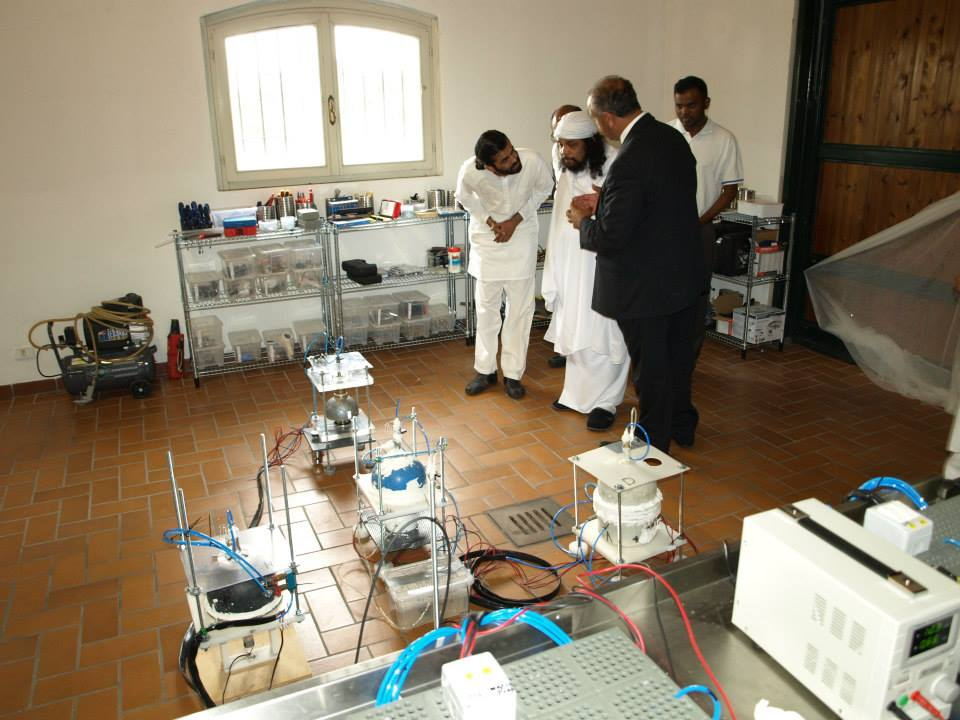
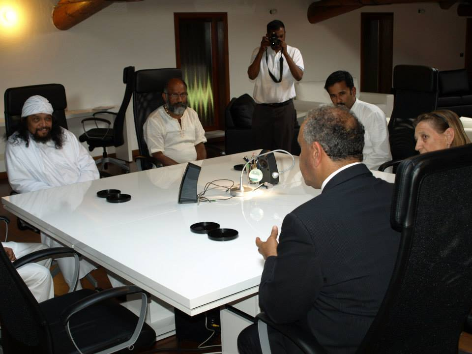
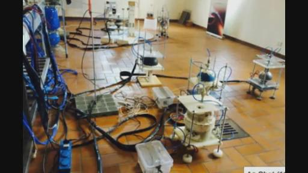
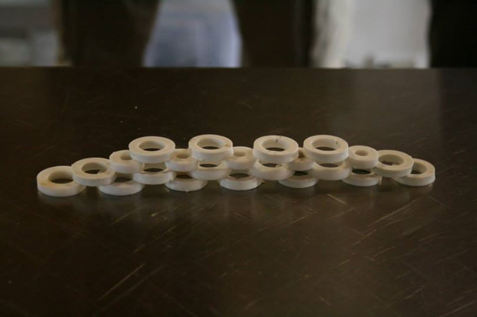
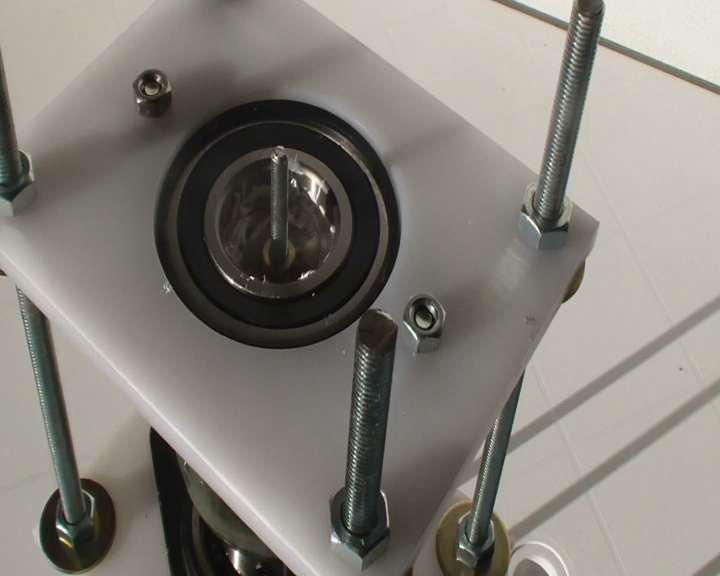
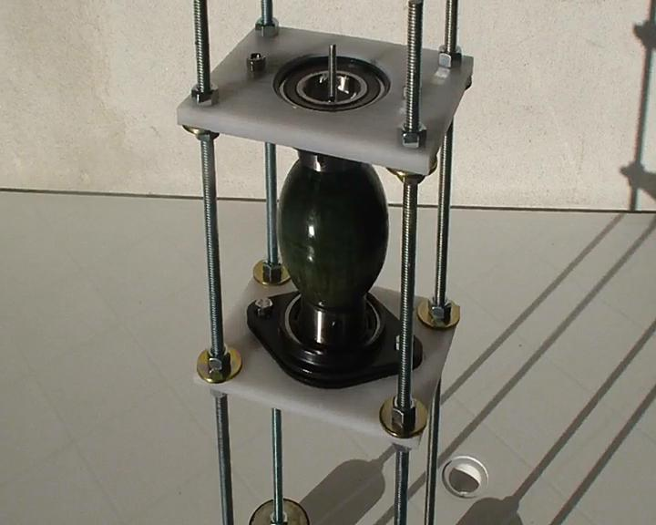

2014-07-03太空学院第十七次教学
创建时间：2014-7-5
10:36 修改时间：2014-7-11 22:40
视频下载：http://pan.baidu.com/s/1hGhyQ
VAO提供
在线观看：http://www.livestream.com/kesheworkshop/video?clipId=pla_5a4b239b-24c1-4d20-a63f-fb45caca41f9
（欢迎学习爱好者传阅，若转载请注明文本来源不要断章取义，尊重你所看到信息的完整性）
口译：漫步环宇
录音：漫步环宇
打字：KESHE_HUMAN，涠洲岛，水莲，彼岸花，一心，镜公子，VAO，小坦
复制：KESHE_HUMAN
统合：KESHE_HUMAN
RICK：好的让我调节一下，机器都调整到位了。好的，我们已经准备好了，来开始我们的第17次知识寻求者的网络教学，在这一次的网络教学中我们跟
往常一样请来了KS先生和太空学院的MARKO和ARMEN，JOHN还在睡觉。YVAN现在在他的医院里工作，现在我们已经到第17次网络教学了。凯史先生也提到
了这次网络教学的话题是关于一些装置的新的设置。也是关于实验室中反应器的设置，也希望关于MAHAN和平代表团他们一些成员的消息，我们也看到在FB上看到
一些图片，看起来也是很有意思的，希望他们这次能够讨论有关这方面的问题。有什么评论吗？有一个人提到比较有趣的说法就是这种灵性和KS基金会的联系呢，他认为这是有一种非常直接的联系。凯史基金会和这种教学有一种直接的联系，他认为这之间有一定的内在联系。他和印度这些灵性专家他们的教学之间是不是有一些内在的相关性。因为这个团体他们在印度在过去的几年当中实际上也在进行着他们自己的教学，教学当中主要以和平为目的。传播和平理念为目的，也是进行了10几年或者几十年的时间了。所以很明显这也是他们生命中的一个使命，所以我想他们之间也有这样一种相关性。所以说看起来也是一种比较自然的联系，和凯史基金会有这样一种自然的内在联系。凯史先生你那边的声音有断断续续有些小我刚才没听见你在说什么，能否再说一遍。
KESHE：现在好点了吗？
RICK：现在好点了。
KESHE：我刚才说我上周四和印度宗教团体的大师进行会谈，当时他们是午后来的，然后我们一直谈到快到晚上的时候。在午
餐的时候我们就已经开始了会谈，然后在后来的时候我们又进行了私下的会谈，主要谈论有关他自己的团体的相关事宜的谈话。他们也是一个比较大的国际机构，我们理解他们的立场，就是MAHAN团体他们的立场。实际上他也和KS基金会的这种做法是一致的。在比如说世界和平这样一个目标对他们来说。他也再次被邀请来参加7月14在我们这里举办的会议，就是针对世界宗教领袖举办的会议。他接受了我们的邀请，他这个团队的代表将会在7月14日来参加这次会议。同时他们也提出这样一个请求，就是在8月份的时候再举行一次会议。当他从美国回去的时候，所以我们已经将第二次会议的时间设定到了8月29日，主要是为了讨论有关世界和平议程的执行和安排的问题。同时就是包括将这些凯史基金会的技术在印度也能够得以传播和实施这样的一些问题，所以我们可能会看到在凯史基金会国际的基金会，然后我听到背景有很多噪音是怎么回事儿呢?
RICK:是的，我在背景听到了杂音，但是我也不知道怎么回事，看来我得关闭下我的麦克看看能不能解决这个问题。
KESHE：好的，这样在8月29日的时候，MAHAN大师这个团体就会回到他们在印度的基金会中心。



议题将会讨论到就是关于，创办凯史基金会的太空学院这样的一个教学机构。在印度开办这样一个教学机构。就是在和他们的团体来合作进行推进这件事情。所以我们在知识传播方面也会进展到下一个环节，直接在印度来推进这项知识的传播。就好像我们在意大利现在着手创建的事情，学院这些事情是一样。所以我们也注意到这些事情它的前景也是光明的。现在也在观察下一步将会有一个什么样的进展。类似像这样级别的会议，将会和其他国家的政府也会开展这样级别的会议，也会有更多这样级别的会议在今后展开，还有不同的团体。在过去的几周当中我们已经接待了不同的团体。同时，明天早上的时候将会有另外的一个代表团来到我们的中心。我们也要来观察和这个
代表团这种商谈会有什么样的结果，从整体上来讲我们正在向不同的方向来发展，但是就像我们经常所说的那样，我的希望就是我们不会将某一个地方成为我们唯一的中心。我们也期待这样的一个进程将会得以继续，也会尽快的在未来这些年中迅速的去推广我们进展的这些事情。这样这种转变就会来得更快一些。因为这样的话我们就会有更多的自由，我们所举办的世界和平会议它的目的就是，一个需要强调的问题就是，到目前为止我们还没有接收到一些回应。就是来自其他的各国政要的回应。昨天在和梵蒂冈的一个沟通当中，或者前几天，看起来我们得到一个比较有力的回应，但我们还没有得到确认，所以我们需要向梵蒂冈提交第二封邀请函，希望能够得到他们的一个正式的回应。（第二版邀请函
http://note.youdao.com/share/?id=a00c72bc9bbb5076a26e2ce2ef782661&type=notebook*含以往所有公开信*）
所以我们也在观察这个事情将会怎么样发展，就像我们所说的我们并不期待会有很多人会来参加这次会议。实际上在我们的和平信息当中已经把这几个原因说的很清楚了。就是还有在《以我之名》这封信当中。如果你看了你会知道里面谈了很多的问题，它谈到以不同名义创建的不同宗教实际上是给它带来一种终结的命运。所以让他们来做好准备来接受参与这个会议也不是很容易的。有关设置的问题我和MARKO和ARMEN所做的这些事情，会更加详细的解释这个事情。而且我们现在已经经历了整个中心化的问题，就是它的中心化的一个输气的过程在昨天或者前提的时候已经完成了。哦，是昨天的时候。这样一个设置它的含义就是：过去的时候我们在给这些反应器输气的时候，我们通常的做法是一个接一个的给反应器来输入气体。现在我们设置了这样一个装置就像我们解释的那样，就是把它设置成这样一个状态，可以能够同时给所有反应器输气。实际上我是在玩这些东西，相当于自我的娱乐。（笑）它的意思就是说我们从现在开始可以从中间控制所有的反应器来输入气体，这样所有的反应器就可以被进行输入气体的处理，都是可以通过一个输气管道来实现的。这是以前从来没有做过的，这也是非常有趣的去观察它的发展进程。它整个过程的目的就是去对整个这些反应器去进行一个控制，同时不会去影响它的正常的运行。因为我们会同时来向所有的反应器去进行输气。这样的话从某种程度上来说，也是反应器本身通过这种方式来选择他们需要什么样和什么量的气体。也就是说它们自己会决定它们是否需要这个气体，是否来接受这些气体。整个这个过程也是非常有趣的。ARMEM和MARKO他花了几天才完成这样一个过程。就是完成整个这样的一个设置。这也是之前的一些网络教学中他们谈论过的一些事情。这种设置它也使得我们在不久的将来可以把所有的反应器的电动机联系在一起。然后给它们提供一个统一的电力控制或者电力供给。这样的话我们就可以在电力供给的时候实现上下的供给，同时可以在输入气体的时候可以实现上下的输气。这都是以同时的方式来进行的。这样的话它给我们就带来了很多需要完成这些事情所需要的设备，才能完成这些事情。新的设置是由2个星体组合完成的。

（近距离是半球组合，远处是完整球体组合）
也是通过内部进行的联系，和两个反应器相互联系在一起，这就意味着我们有2个这样的星体组合。它们是内在联系着的，而且是独立运行，但是它们也是相互之间有这种联系的。还有在反应器的旁边还有一个反应器就好像这样的状态，但是它们之间是相互连接的，我们看到这种设置有比较特殊的现象或在输气的时候。我们也在观察在未来的日子中它会有什么样的进展，整个这样一个思路就是去，现在我们已经有8个反应器在地板上。现在其中有2个JOHN制作完成做好了准备。其中仅仅使用了甘斯的材料。装置到目前位置实际上都是设置好了之后都是使用气体来进行的。现在我们已经打开了一个新的领域在科学界，其中我们可以制造出等离子体，没有使用任何的电力的输入或者使用任何放射性的元素，而仅仅通过这种氢气的相互作用和纳米层和纳米材料。在这之前从来没做过，而同时由于纳米材料能够制造出我们所说的气体变成等离子体，它又包含着等离子体，就意味着等离子体它是由制造出等离子体的这些成分的，对等离子体实现了一个约束这样一个现象。这种做法实际上在等离子体行业当中实际上是一个未知的科学，或者说是一种未知的技术。我们通常用不同的技术来处理这些等离子体来实现能量的分离，而现在呢，它的这种约束它本身就会制造出自身的等离子体，所以实际上我们也非常感兴趣去观察这项技术它会有一个什么样的进程，昨天的时候，某种程度上我几天前向我们知识寻求者做了解释，当你来到我们的实验室当中，那么无论你是什么时候来的实验室的时候，都不要特别关注反应器的一个具体的物理结构。就是说反应器它一个具体的旋转的形式，以便去确认反应器内部的等离子体已经开始运行了或者类似的情况。同时也不要被它的这种不同的声音带来一些不同的理解，为了实现这样一个状态，我们昨天的时候将2个反应器的运行的电源关闭掉了。它们当时正处于正常旋转当中，但是在我们的这些监控的设施上面，我们并没有看到它的等离子体运行的状况有任何的变化。我们同时继续来向它的反应器内部输入气体。同时我们还继续仍然可以看到等离子体的一个提升的效果，所以实际上电动机它的一个具体的旋转。它和等离子体本身的旋转已经没有直接的联系了。就好像我昨天说的那样。我们都是在慢慢的来观察每一个环节，一直到反应器进入到一个完全停止下来的状态。当我们把电动机给它撤离掉来看它对整个反应器运行是否会有任何的影响，也是为了观察电动机本身的一个磁场对等离子体它是否会带来任何的干扰或者影响，因为它们是处于物质状态的。所以我们也期待着能够达到这样一个状态，就是我们看不到任何内核的旋转，或者实际上的旋转。或者说电动机的实际的旋转，但是我们可以看到等离子体本身的旋转，同时看到对等离子体的吸引的效应，就是在每一个装置当中都有这样的一个效应。
RICK：那你这么说是否就意味着电动机它所提供的完成的任务就是，相对于制造引力场的任务已经结束了呢？就是说在反应器内部制造引力场的任务是不是就结束了呢？因为它最初只需要运行一段时间以便反应器内部的层能够得以比较适当的设置或者是在内部完成一个层的效果。或者说让这些层在反应器当中实现一种自我适应的过程。这样的话就可以适应把所有的事情都设置安排好，然后回到某一个程度你可以把反应器给它停止下来。即使你停下来的时候这个反应器仍然还会具有某些功能和特性，是这个意思吗？可不可以再请你详细解释一下这方面的问题？
KESHE：实际上所发生的事情就是，还是回到之前一个比较有趣的事情上吧。当我们最初创建学院的时候，或者当我们最初开始我们实验的时候是要发生一系列的事情要，设置了一系列的事情。其中缺少任何一项整个事情都不会得以成功。现在我们实际上也处于同样的一个事情的发展顺序当中，有的时候我们打开了一个整体的结构来创造纳米层来使用烧碱材料来制造纳米层。这里面我们也看到了不同的情况的发生，实际上它是整个方法或者过程的一部分，然后我们使用了纳米层来制造出甘斯的材料和一些能量。（然后我们用纳米涂层我还可以看到一些噪音在背景中），然后我们用纳米涂层呢，把它设置在反应器内核心的内外壁上面。所以呢，事实上我们整个的设置就是我们的反应器所在的实验室，我们实际上的工作实际上是在实验室开始的，是在第3-4周才开始去做这些反应器。当时是向两个不同的方向去发展，一个就是去创造材料的甘斯。第二个就是用同样的纳米材料。把它用作涂层放在反应器当中，然后制造出等离子体。在反应器内部这些等离子体它的方向，实际上并不是为了用来作为一个约束的作用。就像容器的一个约束的作用。实际上也是一种在一个方向上制造出甘斯的同样的方法和过程。它是制造等离子体的一个步骤。在未来的这几周当中，一旦我们达到了这样一个状态后呢。我们就不再使用这些甘斯的材料或者甘斯层了。因为等离子体本身就可以保留它自己的位置或者说状态，就好像我一直在和JOHN所开的玩笑那样。我经常对他说你最后要把所有这些内核都要打碎的。因为你把它打碎后我们可以看到里面的等离子体，它还会对自我进行这样的一种约束。所以整个的一个过程就是去制造纳米涂层，在一个方向上，在物质的环境当中。比如说在海水当中，或者在海盐中来实现等离子体。或海盐中实现等离子体，或者在GANS的环境中再次释放等离子体，通过气体，所以实际上它们没有区别。它们之间的基本情况实际上就好像我在之前所有网络教学里经常说的，你要去创造它的环境而不是去制造它本身，所以我们就制造出了地球环境或状态，我们就达到了制造蛋白质的状态，就是在材料的状态下制造蛋白质和GANS，现在在反应器中，我们制造出了整个宇宙的状态，在它的内核中，我们就可以同样的方式制造等离子体，但这次我们是用气体的材料。不久，JOHN他现在也非常忙碌地制造两个新的反应器，现在来看它下一步就是，这两个反应器已做好准备来使用GANS材料，用其制造等离子体，然后用在另外两个小的反应器中。等离子体在气体状态中的一个不同就在于，GANS本身已经处于等离子体的状态，已经处于球形等离子体状态，
在这种状态中，我们就不需要在其内核里再去进行更多的附加的纳米涂层的处理了，因为我们已经制造出了等离子体，在GANS的状态下。所以在这种情况发生的就是，JOHN他正在做两个比较小的陶瓷反应器的设置，同时，他们也在制造同样的过程，但是是利用一种类似像透明塑料的结构制作的，所以我们没办法观察到JOHN做的反应器的内部运行效果，但是我们可以看到ARMEN做的2个反应器内部的效果，他可以向我们展示同样的特性。因为他的是透明的，我们可以看到内部运行的情况，很有可能我们会用着3个反应器在一起运行，
这样我们可以观察参数的变化，相关情况，因为反应器的大小意义不是很大，他的容器的大小意义不大，所以在未来的日子里，我们将会进入研发的下一个阶段，就是要用到GANS，（00：20:18-00：20：23没听清）
所以整个方法或过程就是制造等离子体及对等离子体的使用，就有了2个不同的发展方向，2到3个方向，一个就是通过气体来实现等离子体，利用纳米涂层这样一个容器来实现它的约束，然后当我们制造出了等离子体，我们就不再需要它的约束，或者说我们使用甘斯状态下制造的等离子体，来制造出同样的磁场，我希望我们的这种做法是正确的。我们也希望这种做法是正确的，就是通过GANS材料来制造等离子体，就是非常类似太阳系内部的结构，在它的星体当中，在这些星体中并没有很多的等离子体，就好像是磁场的中心或者说有物质的等离子体，它实际上也非常类似JOHN所预测的方式运行，昨天的时候我们也在观看这个情况，它把CO2和CUO的GANS混合在一起，在一个瓶子中，观察混合后会有什么样的效果，我们知道在反应器中会制造出一些水，这个过程过多或少和上次做的状态类似，所以它到了这样的状态，就是在未来我们是否可以达到这样的一种状态，我们需要这些GANS，在真空状态下的。其中还有液体，所以这些反应器还有过去3到4个月做的事情呢，实际上是一步一步的对这项技术的一个理解和研发的过程，下一步我们需要如何来做向知识寻求者做了解释，我们在来自伊朗的反应器里看到了材料的制造，因为它有一个小的窗口，通过这个窗口我们看到了物质的GANS状态，我想这些事情也在前几周我们也向各位进行解释了。现在利用JOHN做的2个反应器我们已经解释或制造了一种层或者帷幕，叫等离子体的帷幕。目前来看我们所做的2个星体组合的设置是并列放在一起的，我们就启动了它们间的这种效应，它们间有相互作用的关系，在未来，可能要过了假日之后呢，我们会把JOHN做的2个反应器放在星体组合之间，这样就能够在这2个反应器的运行之间创建一个等离子体的帷幕，而这个帷幕取决于我们在它的内核中输入了那些成分，我们应该可以实现它物质的状态，它实际上意味着：1号星体组合的磁引力场的摩擦，就是它和帷幕一侧的这种摩擦，和等离子体帷幕的摩擦，它们之间的相互作用会产生一种摩擦。这个摩擦将会可以控制场体的强度，可以控制它两侧场体的强度，这样就可以导致材料和物质的产生，这个工作就是我们这边的假日结束之后要做的，实际上它就是我们的太阳系当中的行星所完成的工作：太阳的磁引力场和地球磁引力场相互作用，就使得地球处于这样一个位置可以制造大量氮气，往更远的地方看，同样的一个过程也发生在土星上面，也会有同样的层，它也能制造出磁场的帷幕，它也可以制造出太阳系这样的效应，就像是我们的星体组合那样，和地球场体的相互作用。在关于这项实验更多的相关步骤会在未来这些年当中去逐步的实验实践，好像我和MARKO和JOHN和ARMEN讨论的那样，就是说我们把许多这种小的用GANS做的反应器放在小的盒子中，在盒子里取决于它创造的场体的强度，我们可以在盒子组成的形状当中制造新材料，并不是像一个帷幕那样。在未来的太空飞行器中，你可以制造出一个特定区域它其中含有特定的场体，在这个位置上你可以制造水或你需要的材料，比如处于GANS或等离子体状态，然后可以把最后的等离子体状态转换成GANS或物质状态，你需要深入意识到的一点就是：当你（00:25:15-00:25:19？）小的反应器。这样你就需要制造这样的环境，就可以制造出持续不断的水源，是唯一可以制造的方式，盒子的房间或环境其中会有持续不断的等离子体的流动。在它的内核中，或者说能够通过它持续不断制造你需要的各种材料，你需要用的材料，比如你可能会用到铝来制造出一些装置或者生产某些东西，对某些装置修复，你需要改变场体的强度，这要根据反应器的状况，实际上这也是宇宙中这些材料是如何制造的，是和我们之前解释的一样，对这样过程理解。
比如在星体当中，在星系具体的位置就会产生它本身就能生成的材料，实际上是在等离子体状态下发生的，所以具有完整磁引力场强度的等离子体呢，比如说具有这种物质或质量的叫做“钚”呢，也就是说在合适的环境中就会制造钚元素，它可以制造出产生钚的环境，它可以制造出产生钚的环境。同样道理如果制作出了可以产生氧气环境的话，氧气会随之被制造出来，所以在科学界被误解的一个情况就是：宇宙中的这些尘埃是太阳尘埃，就像我们在太阳系看到的众多的这些尘埃的材料，就像我们在南北极看到的极光效应实际就是和太阳释放出来的磁引力场的能量团相互作用产生的，当能量团达到太阳系的某些环境中的时候，就会把等离子体转换成物质，所以实际上我们这个所做的这些磁体或磁场帷幕实际上就和太阳系中的这些尘埃所起的作用是一样的，就是宇宙尘埃和我们做的磁帷幕的效果是一样的，它的结构是非常简单的，这就是我们了解的也是我们需要测试的，如果我们去使用这种单一材料，比如铜，它就会在帷幕附近产生铜的材料出来，如果你用的是CO2，最终会制造出CO2，所以实际上我们可以事先把环境实现设置成你希望做某些事情的环境，也就是说你制造出了这种环境的磁引力场，或者它的帷幕，这样你就可以看到你所需要的材料被制造出来了。我们的一些太空科技，它就好像这些（00：28:02
use like a ? system
）的装置：也就是你无须满地放这些盒子，你可以制造出一个环境的盒子，里面有不同的内核，这样就可以改变这个环境。你沿着它的中心内核去移动，在星体组合，在它的边界上面，实际随着你移动它的内核，在系统上面你可以制造出不同的材料，这些都可以在一些紧急的情况下得以实施，这些都是可以制造出来的，实际上就是说当你把内核在它整个的边缘上移动的时候，它可以制造不同的材料，实际这种做法在紧急情况下需要去这样做的，但这不经常需要，但可以实现它的这些效果的，它实际就好像说如果你把地球移动到离太阳近的地方的时候可以制造其他不同的新材料，当移动更远的时候，比如到土星的位置，就可以制造比如氦元素，如果它不能移动的话，就会制造很多磁引力场或等离子体，这些就是我们将要谈论和研发的其中一部分的技术，在未来的这些日子当中，实际上我在互联网上也看到之前的知识寻求者发表的非常有趣的观点，他就提到在凯史基金会里出老类似奴隶制的状态，实际如果你不去给我们这些知识寻求者做的事情设置时间期限的话，这些伙计可能就会在实验室地板上连吃带睡了，会处于这样的状态，我估计其中有些人会说你就让我在这里吃面包，我会直接在这里睡了，我们现在所做的是真正的对知识探索。（00:29:20
and not people who come with? expect everything be done and
set）现在结构就是，基金会所有的知识寻求者去制做或他们把带来的材料装置去做实验，或者和其他的装置结合做自己的反应器，有些人就希望，因为装置是自己带来或制作的，这样他就可以来支配这些装置的使用，我想他们还是应该处于梦幻的状态，因为他们可能希望通过在这里学到技术在外面用来做其他的事情，因为实际情况就是如果你像我这样的知识寻求者的话，像我们的现在的知识寻求者那样的话，时间对我们是没关系的，我们所创造的是物质，在很多时候，我都会给我们的知识寻求者，施加一些压力或者给他们设定一个期限，比如在20:00是必须休息的时候，不然，这些伙计会像我一样一直在实验室工作到凌晨1.2点的时候了。
（第一次翻译截止00:30:20）
我们并不会强制人们住在这里或者是留在这里，人们留在这里是因为想来享受制造某些东西的乐趣。所以如果说这里有一些误解，就是说有些人来到这里，就像他们所称的？（00:3034all?)那么要有很多的研究工作，很多辛苦的工作，这些都是知识寻求者需要去做的事情。他们要离开自己的家人和所有物质的这些财产，来到这里为了就是去推进人类整体的知识水平。如果你想申请成为一位知识寻求者，如果你只看重眼前的这些利益的话，并且仅仅关注理论方面的这些事情的话，那么在我们的这个学院它并不是这样运做的。实际上在我们创建我们学院的之前，我们并没有任何隐藏的计划。我们根据时间是否成熟来向知识寻求者来传授我们的知识。如果说我们在三个月之前就来向各位，向我们的知识寻求者去传授有关等离子体之间相互作用的这个知识的话，它本来应该是第8次课程才能讲到的这些问题．这样的话实际上就没有任何的意义了。现在我们已经有了这些现象，我们再来传授这些知识，它就是一个非常自然的过程。比较奇怪的一件事情就是来自世界各地的普通民众，在收听我们这期每一次的网络教学的时候，整个这个过程对他们来说已经变成了一个非常自然的一件事情。但是你可以去问一下那些在等离子体技术这个行业当中的那些人，他们都会嘲笑这些事情，他们认为这都是在开玩笑。因为他们想像不到仅仅这几个人就可以实现如此重大的技术突破。在科学和等离子体这个领域当中。我们所做这一切并不是去为了摧毁之前的这些知识体系，而是去为了去创造，去为了更好的研发。但是人们来到我们的太空学院，每个人都有自己不同的期待。他们用各种不同的名义来掩盖他们自己的这些观点或者是自身的一些缺点。我们的基金会是如此的强大，也是非常的正确，不会受到这些无端指控的影响。我们也不会去回应这样一些无端的指责．但是现实的问题是：如果说你会被接受成为一个知识寻求者的话，或者说成为来自世界各地的凯史基金会的知识寻求者的话，或者说在宇宙当中，以为要拿有一张纸，一根笔，然后再有一台电脑，那是人们学习的一个习惯．没有人会揣着一根钢笔，或者说在以后当中你拿着这些纸，它实际上是一件可笑的事情，但是现在人类就是以这样的方式来生活学习的。在学校的时候他们只需要一台ipad。我们没看到很多同学他们带着很多的东西。除了他们要带的一台手提电脑，或者说是一台掌上的平板电脑，就像我的六岁的儿子他也会去这样做，就是有一台平板电脑。而抒写这种方式它实际上有些过时。可能不久就会被人们遗忘．所以如果有人认为这些知识需要以它所认为的那种方式去传授并且要抒写下来的话，那么它在我们这里是不会发生的，不会这样做的。我们的这些教学通常都是以案例来为基础的，我们也会视情况是否出现来进行知识的传授。也就是说看时机的是否成熟来进行知识的传授。我们整个的讨论它也是整个研发的一部分．这种科学的争论实际上就需要以这种方式来传播知识。不然的话它就会成为一种科学的独裁，也就是说当你看到某些新的东西之后，有些人他不理解，有人需要在同样的一个轨道上，直到他们能够理解。所以在一个比较大的方向上来看，我们并不会去抒写，整个的结构就是也不会提供注释。也不会去照本宣科．这是我们学院的一些实际的做法．就像我们所说的，在宇宙当中并没有清真寺，也没有教堂，也不会有纸张和钢笔。如果你在宇宙当中看到某些人他们带着纸张，钢笔或者是铅笔，然后去写东西的话，我想那个时候你会感到非常的惊讶，所以我们采用的是同样的一个模式，我们的知识的传播也是以这种同样的方式，把这些知识传授给我们的知识寻求者．他们会将这些知识传授给你，
而不是把这些纸张交给你，传递给你。所以我们整个的教学的方法和过程也会继续得以保留。我们也会尽可能多的去记录我们在教学过程当中所发生的这些事情。以便它能够在未来起到一定的这样的作用。但是如果你想说在这里听我们的这些知识的传授之后，希望能够通过论文的方式，写论文的方式来获取这些知识或者传播这些知识的话，实际上你不会有这种方式的课程的。我们是不会花很多的时间在这方面的．我们实际上就是要以现在这种方式，现场的情况下及时来传播传授我们的知识。这项技术另外的一个整个过程的一部分，或者说对整个这些发现的一个基本情况就是要了解，需要去对它有什么样的期待和不会有什么样的期待。目前我们也在推进的这些科学，以一种非常小的步骤向前推进。我们以一种非常简单的方式向知识寻求者来解释，来让他们理解等离子体相互作用的目的，我给他们留下一些X（未知数）去思考吧。上周的时候，我在实验室的桌子上放了些鸡蛋，让他们去思考。因为我当时听到他们谈论到有关等离子体相互作用的事情。JOHN也在这之后拍摄了一些照片发布了出来，我们之后也会把它公布出来。你想理解等离子体和物质之间的区别，你可以非常简单地去拿一个鸡蛋，在你手上的鸡蛋就是一个物质。如果你把两个鸡蛋打碎，然后让它们混合在一起，你就会发现等离子体的相互作用，它不会有这种具体的物理的边界，但是却会有等离子体不同部分物质的相互作用，蛋清和蛋黄的等离子体，蛋清它就作为水的等离子体，它们是相同的。如果你把不同的给鸡蛋打碎，然后让它们并列放在一起的话，你会发现它们都会被打开，然后都以一种比较类似的形态或结构表现出来，它们并不会都是椭圆形的，它们边界的形状也都不会是一样的，它们的边界形状都会朝向某一个方向，就是我们说的蛋清的排列方向会有些不同，就是来自蛋黄的这些蛋清的这种排列或是连接的方向，它实际上就是真正的胎儿开始的地方，它就会创造出一个牵引，你会发现对这些材料的牵引，或者说这些材料形成的水池，在这里会产生一种牵引的现象，它实际上就不会使得这些鸡蛋再以物质的形式形成球形的等离子体，它实际上就是一种非常简单的方式来解释并去理解等离子体和物质之间的相互作用。鸡蛋是物质，一旦你把它打破，就会有三种不同的等离子体之间会发生相互作用，如果你把两个已经被打破的鸡蛋给并列放在一起的话，你就会看到两个等离子之间的相互作用，这也是我们所期待和看到的。这就让你会有一个非常清晰的理解，这也是为什么我会让我们的知识寻求者来观察鸡蛋实验的原因，如何去理解和解释它，在很多程度上。那么已经介绍了我们在这里的目的和我们为什么这样做，为什么以这样的方式去传播知识，并且改变人类。这也可能是第一次我也向ELIYA解释了这个情况，上次我也向知识寻求者解释了这个情况，现在呢，也是向人类来解释的时间了，就是在整体上告诉我们的普通民众，凯史基金会的目的是什么，为什么我们以现在以这样一种我们所进行的方式去传播知识。实际上在托斯卡纳的时候我已经将这个事情向我们的知识寻求者给了一个例子做了解释，我们看到一个非常著名的受人尊敬的意大利科学家，就像我们在上周所谈论的那样，他的名字叫朱利安尼，
他研发了一种装置可以来预测地球上将要发生的地震，他可以通过这种放射、辐射方式来预测地震，在6～24个小时之前来预测出哪里要发生地震，现在这种相互作用就是这种辐射和它的物质之间的相互作用，如果你创造出一种我们所做的反应器，当中用等离子体的话，你在它的周围放上一些环形的磁铁，比如说在实验室或者家里面，你会理解每一种等离子体的磁场，你会发现他们都会有它的引力场或者磁力场，磁力场本身是排斥性的一个场，如果你处于一种动态的状态的话，如果你在桌子上相对于其他的磁铁去移动一个磁铁的话，你会发现移动的磁铁会去吸引和排斥其他的磁铁，如果你有两个单个的磁铁的话，它就会达到这样一个点位，或者说位置、状态，这两个磁铁会产生一定的吸引，然后它们会有吸力，会聚在一起。实际的情况是，地球和太阳系都具有我们所称的双生的系统，也就是说双胞胎的系统，它的双生系统一旦和我们的地球接近的时候，都会在地球上造成很大的灾难或者说是混乱。这些事情也都有详细的文件记载。这就好像是说，如果你把两个场体靠近在一起，就好像我们在实验室的桌子上面看到的两个鸡蛋混合在一起的时候的情况，它们就会达到一个相互作用的位置，会产生一个吸引的情况。所以说，就像我们从太阳系的这一面所能看到的这种情况，这个点位、这个状态，它已经出现了，就是它的双生的系统也会很快地和我们相会，但是太阳系整个的结构就位于整个星系的一个悬臂上，而这些星体都是在这些星系的外边界上被制造出来的，在旋翼上它们会被吸引，也就是说，星系它的中心的磁引力场会产生一个吸引的效应，就好像说地球会被吸引到太阳中心的位置上，地球和它的双生系统之间的相互作用实际上是无法避免的，就好像意大利的科学家可以在6～24小时之前预测地震的发生那样，地球和它的物质之间的相互作用，来告诉大家将会发生某一场地震。作为在星球外面的人，就像我们作为星球外面的能够看到这一切的人，我们也能够感受到这一切的将要发生，所以说在很多程度上，我们的这一种教学的进程。（第二次翻译截止00:40:46）
我们所进行的这些教学在很多程度上就是要给人类提供这样的一些方法和专长来应对这些事情。这种如何去应对的方法所相关的一些事情或者故事都是重复过的。而且我们也知道这种事情是很快就会再次发生的。所以如果有人问我们为什么以这种方式教学和去做这些事情的话，就是他们所称的针对地球的审判日。或者针对整个太阳系的审判日，实际上是磁引力场的一个正常的自然的运行过程。他在时间到来的时候所有这一切都会发生的。所以如果说2个太阳系它相配到一起，产生混合的状况后会发生什么呢？会对整个人类带来什么样的影响呢？如果说我们没有来提供这方面应对的知识和专长的话，应该说人类对这种情况就会束手无策的。实际上人类应对这样事情的方法，就是能够远离地球比如到月球或者其他的一些地方，这样的事情用现在的这种火箭推进技术是没有办法完成这些事情的。我们现在的传播的这些技术就可以完成这些工作，但是要以正确的方式去传播和使用，如果你来问这个问题就是，我们的目的是什么为什么要这么做的话。实际上就好像意大利的伙计他能够预测地震一样，因为我能够看到这2个非常自然的过程它很快就会发生了。所以说如果你去一个海边的小的村庄，这个地方马上就要来海啸的话。实际上我们知道的这种情况之后，就像我们现在知道了地球它也正面临这样的情况一样，我们要采取一些行动来保护。所以说他们不去遵循我们的这些技术和知识指引的人最后为自己的选择来付出代价的。整个过程是一个自然的过程并不会因为天气气候的原因造成的。实际上是整个太阳系发展的一个过程，还有整个星系和宇宙发展过程的一部分，就好像2个人相遇的时候或者说比如说2个反应器汇聚到一起的时候会有不同的场体，其中一个场体强一些，另外一个场体弱一些。就好像我们看到这种情况在我们的实验室中，其中一个就会成为输入气装置，另外一个称为接受气体的装置，或者说接受场体的装置。最终它们会被吸收到一起，因为我们在昨天也观察到这样的情况，在实验室的时候，这种卵生体的系统，就是说电子和质子，包括我们的地球和它的双生星体，在不久的将来它会以一种不可逆转的方式去相遇的。但是这里面有一个非常重大的区别，在地球上人们有这样一种习惯就是去制造各种混乱，就是去发动各种各样的战争。如果这种做法仍然在太空当中继续进行这样做的话，它就会制造出混乱和恐惧。如果我们传授的是嫉妒还有所具有的这些优势，然后在一种普遍适用的状态的话，那么也就是说你去营造这样一种在整个宇宙中有这样一种优势权的概念的话，实际上你会给自己带来无尽的灾难。所以实际上我们是在发生把人类带出地球前把人类需要了解的情况就传授出去，让普通民众能够知晓。这样的话才能够让人类加入到宇宙大家庭当中。那些人他们经常说既然是你救世主，你为什么不去完成氢氧化钠的事情一些人呢？对此难道只是因为你是一个救世主，难道你不会像其他地球上的人那样去正常呼吸吗？包括像那些奶牛或者鱼类去生活。去生活去呼吸吗？整个过程它是一个很自然的过程。整个过程是很简单的，你们自己来提出自己的一些叫做要求，我们来支持你们用自己的方式做这个事情，然后我们来提供整个的环境，我想这样的话它就会让很多人的疑惑得到解答。也就是说需要你们自己做出决定，而这个决定并不是具体的物理形态的。它实际上就穿越了整个宇宙的各个阶层
各个水平的这样一个状态。你说什么并不重要，真正起作用的是你的灵魂将要采取什么样的行动。这也是对于那些不知道我们在做什么将要做什么的人的行动是一样的。他们想要采取的行动是一样的。实际上就是对你在你自己的水平上去做出判断，你是在你自己的灵魂的水平上去进行判断，因为你的灵魂就会决定作为你的物理形态的身体将会如何去采取各种各样的行为去做什么。那些在互联网上去盗用我们这些书籍的那些人，然后他们说因为我们当时盗用了你的书籍然后从中学习到了你的这些知识之后，我就加入了你的整个这些事情当中的话，就是理解了整个这些事情然后加入凯史基金会当中的话。因为你之前已经有过了这样一个偷盗的行为，所以说在凯史基金会当中没有你的生存空间，所以实际上这些人在后期应对这些灾难的时候，在这些救生的位置上他们是没有自己的位置的。因为做出这种判断的是灵魂，是灵魂对人的行为做出判断的。所以当我们开始打开我们教学的进程。很多人就说可不可以请你更多的介绍一下《以我之名》这封信当中的更多内容。今天我说的就是这封信的当中的部分含义，这就是它的一个结构。它并不会明天早上发生，我们知道整个星体形体结构将要崩溃的情况就要到来，我们也知道2个太阳系它们之间相互作用的时刻。我们有足够的时间来事先做出准备和组织来去完成我们经常事先要做的事情。这并不是第一次。它之前也发生过，它也是在宇宙当中人们去对这些做出正义的事情的人的一个回应。以一种正义和正确的方式来对这些事情做出回应，当这些事情发生的时候来以自己的方式去，或者说去接受这种，如果你想知道更多关于如何去学习这些正确的知识的话，你就要事先去以一种正确的方式去做事。所以在很多层次上这是我们整个教学的一部分内容，也就是说就像各位提到的这是在灵性上的教学或者提升。所以说我们下面要说的就是来传授相关的知识，让人类能够制作出相应的装置以便应对将要发生的灾难。能够在宇宙当中生存下来。我们必须要来学习如何去实现这些事情。以一种人类能够理解的方式去告诉他们如何来去做这些事情。我的问题是不能够把所有的东西都交给你们然后就离开不管了。然后说这是你们的问题了。实际上问题是我们需要事先对一部分人教会让他们能够理解这一切，然后让我们的全球的宇宙的领袖每个人能够按照凯史基金会的理念来行事。所以我们下面要做的就是随着我们学习更多知识和进行更多研发，因为人类它有一种习惯就是总按照它自己的习惯来不停改变这些事情，现在把它改变成一个正确的方式是很大的问题。需要对自己的不足缺点要进行管理，然后能够理解整个的现实。我实际上也是希望通过对年轻人的即时的传播，然后让他们能够了解更多这方面的技术和知识。之后取决于后面参与的事情和处理的问题，这样的话它就可以应对后面将要发生的很多混乱。就是以它应该去进行的方式去进行。所以从现在开始我们就会用这种平行的方式去运行两件事情，要更加有深度的来解释这些事情，就像我之前和知识寻求者解释的那样，本周开始我们的教学就会有一个转变，就是把更多的重点放在对我们凯史基金会的理念的介绍上。同时也会关注一个具体物理形态的状态，因为这两者缺一都不可。
如果说你能够注意到之前的某个事情的话，我们实际上将试图，实际上我们也将这个问题告诉了我们的知识寻求者，因为这也是我们整个教学的一部分内容。我们并没有把它给写出来就像我能够记住的那样，只对我们这边的3个人讲了这些事情。如果他们能够再向另外三个人去介绍这个事情的话，在他们的网络教学中去教这些事情的话，这实际上是一个整体的情况。今天作为我们的这次教学我们也会去解释整个宇宙造物的过程。就是说在本周教学当中我们也介绍了在这个星球上整个的造物过程。就好像我们所展示的那样，你制造出了蛋白质。然后蛋白质它有不同的场体或者引力场体，这种改变在它的场体或者位置就会产生生命。也就是制造出新生命。如果你去观察整个星球上整体的生命的话，实际上你们是完全一样的。一个猴子也会有肾和肝还有心脏，人也是同样会有这些器官，鱼也会有，鸟也会有同样的这些器官，它是以不同名字不同形式表现出来的。所以说造物最初始的状况是来自同一个源头的，我也之前向知识寻求者介绍了这个情况，就是在地球上的生命是如何开始的，它实际上就好像我们经常讨论的问题，鸡和蛋哪一个是先出现的呢？第一个它是三个不同的等离子体所组成的，它第一个是来自于两个等离子体或者三个等离子体，当这三个等离子体混合在一起的时候，会有不同的场体强度，在中间的那个它就创造出了不同的点，这些磁引力场他们的位置以及它们是如何相互叠加的，其中就会导致一个实体的出现或者产生。它实际上再次回到了我们今天整个谈话最初的地方，就是太阳的磁引力场和地球的磁引力场相互作用，和帷幕的场体相作用。这就导致了地球的大气层产生了氮气，现在你有一个等离子体它就位于2个等离子体的中心的地方，它们有不同的磁引力场强度。这样的话就产生了引力场的类似像风一样的，比如类似像飓风，已经形成了像涡旋漏斗一样的龙卷风，这种漩涡实际上是球形的漩涡。所以说这2个帷幕之间的相互作用，一个在它的北边一个在另外太阳的一边，导致了物质的产生。这些物质它们本身就会回答它们的位置，同时也会去对自身进行组织形成一个有组织的材料。那么在地球上就形成了我们所知道的氢氧氮碳这些元素，这4种元素作为等离子体的状态最终导致蛋白质的产生，作为一个独特的状态。它就会有不同的场体强度，就像我们看到不同的蔬菜，它有不同的蛋白质就像我们在实验室看到的，我们把它们有的称为鱼肉有的称为牛肉，因为它们有不同的场体强度，最终导致这些材料的产生，这些材料要根据它们是在哪里产生，然后会成为什么样的状态，就最终导致了我们所称的生命的形成。生命需要有它的各种系统，就是比如说控制系统，这里面就包含了情感方面，还有具体物理形态的这些系统。具体的物理形态我们把它称为水蛭。这个水蛭它用来进行储存这些食物，来处理这些事情，还有对整个食物的一个循环，就是最终形成了我们所称的肾脏和心肝还有其他器官，所以整个是一个自然的过程。所以生命它有这一切来使用它外部的资源，就像星球一样，它是一个自然的过程。如果说这一切对你来说有一定理解难度的话，就好像我本周对知识寻求者所说的那样，我把2个鸡蛋放在了桌子上面，其中一个鸡蛋当中，我想说鸡蛋它是如何变成一只小鸡的呢？它形成一个新的生命需要一个条件。我们在基金会这边也非常高兴看到一个新生命的诞生。然后我们在那里放了10个鸡蛋然后让它去孵这些鸡蛋，然后看哪一个能够变成小鸡，上周的时候当我们从托斯卡纳回来的时候我们就看到了小鸡的出生，它到处去走动，听着它这种叫声。所以我当时就来解释生命如何像这只小鸡开始形成的。
雄性和雌性它们有精子或者说卵子，当公鸡的精子的磁引力场位于蛋黄之间的两个磁引力场之间的话，蛋黄的两个磁引力场强度之间的时候，和蛋白（蛋清）之间的时候，它实际上就会形成一个漩涡的状态和它的那种条件，然后这个漩涡的状态就会形成一个新的物质的条件，它就被嵌入到了场体当中，就好像我之前所说的那样，说到JOHN反应器的帷幕那样，如果你把CO2输入其中的话，你就会得到CO2,如果你把氧化铜放在里面的话。它进入在精子和的蛋黄当中就是我们所称的DNA的磁引力场，就是小鸡的DNA的磁引力场，或者说小鸡的等离子体的一种不同形态。它以不同形态就是说孵的小鸡的等离子体的场体的不同强度的形态。所以它所做的就是蛋黄它的等离子体和蛋清的等离子体。创造了一个新的环境这样就会改变它之间的间隙，就是说叫做蛋黄和蛋清之间的间隙就发生了改变。因为有了公鸡的精子，它最终导致了一个新的旋转，这样的话就会产生一个新的环境，就是说漩涡的新的环境或者说磁场的运动得到了改变。然后这个场就会改变蛋清的等离子体还有蛋黄，最终就形成了小鸡DNA的等离子体的磁引力场。这样的话我们就得到了一个新生命的开始，因为最终随着等离子体变成物质，然后它就冲出蛋壳变成了小鸡。现在一个非常简单的过程你就能够理解生命是如何形成的，现在我们需要男人和女人才能够制造出一个新的生命。当我之前像给ARMEN介绍的那样，我想应该是给MARKO介绍的就是，如果你能够理解这一切的话，如果你是一位女士你有自己的环境，如果你有足够的能力去改变卵子的环境的话，以特定的状态去改变它的话，这样的话实际上就可以让一个女人去对她的另外一个卵子让它产生受精的情况。最终就会产生一个新的生命。所以说在很多程度上来说，这种处女生育小孩的情况是一个现实的事情。如果你能够理解造物的整个过程的话，如果你能够理解整个造物的真实过程的话，这件事情会影响到很多的人。然后（54:02-07关于祝福基督之类灵魂的事情，听不太懂）但是这是生命的一个现实和具体的形态，它是一个男人还是女人它从哪里来，它是一个小鸡还是一个鸡蛋，现在你理解了它的一个具体物理形态的结构，你现在你就理解了它的一个最主要的过程，就是我们如何来分裂DNA，就是一个雌性或者女性的DNA如何分裂这件事情。就是说我们如何来分裂无论它是雌性还是雄性，它实际上就相当于是对一个新生命的产生或者形成负有一定的责任。男人和女人因为有了这样一种方法，谁来分担责任，然后和新的生命出现的负担。如果你们（种族）有2类人的话，如果是2个个体的话它能做更多的事情。那你就可以更多的来对生命给予支持。所以说在很多程度上我们都能够理解为什么人类会分裂成2个性别，或者说在整个星球上面的这些生命都有2性的原因。这样的话它就允许选择的过程变得非常简单了，就是我们在之前这些年包括上百万年的过程中的一个选择是很简单的。所以说在以一种简单的方式来说，来理解造物的过程。你如果能够理解了整个反应器的结构，实际上它会从很多方式上让你能能够理解造物的过程，现在对你们就会有巨大的意义，就是为什么我一直在坚持说当你有一个反应器在运行的时候去对它祈祷。因为在不同条件下的等离子体它们之间的相互作用就会导致一个条件的产生，而且它会导致新生命的产生。就像我说的所有的生命（00:55:26-29短句听不清）它实际上就是去理解灵魂的结构，所以生命这些事情在很多程度上最好就是去从一个整体的方向上来观察我们在做什么。
去理解生命是什么，我们为什么来到这里的目的，我们是如何来做这些事情。现在你需要远离物质，之后你去到等离子体这个方向上去，之后你就会能够看到并且理解这一切。很多的地方或者位置都是无法达到的。我们没有办法保留它也没有办法去排斥它，人类最终就会成为宇宙中的难民。就好像我从比利时逃亡到意大利成为一个难民一样。只不过这次会是一个更大的规模表现出来，你会发现你没有了原来的家园后你需要找一个新的住所，那么在过去这些年当中在背景中发生了很多的问题，你们很容易会问我们这里有没有外星人，实际上我们自己本身就会成为其他星球的外星人！我们很快就会丢失我们自己的家园，丢失我们整个人体或者肉体。现在在我们的星球上就有这样的一些生命形式的存在，但是因为我们太关注物质形态所以就看不到它们的存在。因为它们有一些是处于场体的形式的。所以说在我们当中就有这样的人，它们并不是由于磁引力场的区别产生的，就像我之前解释的那2个鸡蛋的相互作用所产生的。去形成小鸡或者说人类呢？是的，是有这样的人。它们是不是有那种没有具体物理形态也生存在我们的地球上呢？是的。也有的。因为它们的场体强度我们是无法观察到的，它们到我们这里来是不是要破坏我们的星球呢？这是不会的，因为它们想那么做的话那么他们在上百万年前就这么做了，因为对它们来说人类是非常脆弱的，他们来我们的星球是为了提供支持的吗？是的。在很多程度上来说是的。但是从另外一个角度来说它们意识到的就是在这里实际上就是为了搬家，这也是为什么我们在地球的外太空看到越来越多的这些外星人的活动的，或者说这些不同的活动的原因了。很多人都在移动或者说行动，因为这个事件是很快就要发生的。这并不是一些你能够改变的事情，就好像你现在在星系当中的某些事情，这个是改变不了的。所以它是一定会到来的。地球它本身也是在一个外边界上被制造出来，就像我们看到的土星那样。所以实际上地球最终也会向它的中心移动，最终会移动到整个星系中心的位置上。这个地域它的场体强度将会去吸引它，给它吸引到一个星体上，然后产生一种引力。所以它实际上是一个非常自然过程的一部分。也就是说在整个星球上在宇宙中的一个自然生命的过程。如果你去观察这一切并且能够很好理解的话，我想很多人都会知道这样一个情况就是中子，当它分裂后会形成电子和质子。现在你去观察一下到底发生了什么。电子和质子本身都有自己的磁引力场，质子它本身要相对大一些然后稳定一些。电子就相对小一些但是从质量上看，但是它的等离子体的强度就会更大一些更强一些。最终会有这样一个时刻就是它们2个之间会有一个推力。会到那样一个位置那么产生一个推力，然后形成一个等离子体的条件和状态。就是说电子由于它有很多的磁引力场的强度的话，那么最终它会变得非常衰弱，最终会返回到等离子体当中。这样一来你就会有一个新的中子被制造出来，它实际上是从它之前同样的分裂中被制造出来的，但是是以一种比较衰弱的状态存在的。这种状态将会一直保持下去一直到这样一个点上，也就是说中子向外释放出足够的能量，它会再次的分裂成电子和质子。拥有不同质量的等级，这就是在某种方式上，你会看到不同的中子在不同位置上有不同辐射的原因。这其中的一些中子就是由我们所制造出来的，就是中子吸引所制造出来的。或者说电子它再一次回到就好像我之前所说的在我的一篇论文中提到的那样，就是原子之间的内部的融合，原子间的融合是一个自然的过程。现在在很多程度上它一个接一个的，也就是说为什么我们在过去会写这些论文，为什么那些论文会被俘获然后它们会被保存下来。（被同行审阅制度拦截未公开）
所以在《黑洞的创造》这篇论文中我们当时就解释了2个太阳系的形成的过程或者原因。它实际上在最初的论文中，如果你回到我们最初学院有这篇论文的学院的话你会看到它。你会阅读到这些内容，随着这些星体进入到黑洞当中。它实际上是一个同样的过程，它们会向外释放然，等离子体之间会有这样的相互作用，在这个过程中会向外释放辐射。所以实际上你可以以不同的这种形式来看到10年前的时候，我们就以不同的形式来表达或者传播这方面的知识了。现在它已经成为我们整个知识的全部，我们今天早上所谈的这些问题就是，我们在上周的时候，我们对知识寻求者在实验室中所做的，也就是说随着我们在研发的过程当中有一些条件相对来说成熟的时候就会去传播这些知识，所以我们在进行传播知识的时候，很多的知识没有事先写在论文当中。那么这些知识就是以这样的方式去传播而且以这样的方式去进行，所以如果说你真的把这些都写下来的话实际上差不多要花费我10多年的时间才能写好，但是在10分钟左右的时间你就可以理解全部造物的过程。如果我们能够用这种简单的方式来说的话，它这样做的一个原因就是因为整个的改变就要到来，现在也有一个非常重大的误解，我就意识到（对背景某人：你把那个开关关一下，把那个电池的开关，我在听，好的。我现在可以把那个下载下来。）很抱歉，因为我们在说的这一切都要录下来。我们要另外的把这一切我们这些教学的内容都要录下来。所以我们需要把它给下载到电脑上，需要把它都给整理下载出来录制好，这样的话整个过程实际上是一点点的来进行教学，包括对甘斯这个过程。还包括一直到我们在哪里我们将要到何方，接下来已经越来越明显了，整个的教学的目的就是要教导普通民众或者地球上的人类不要分裂。但是很不幸的是，那些来到凯史基金会的人他们就带有自己的不同或者错误的目的来到这里。不久他们就会发现他们自己的所作所为就使得自己远离了基金会，这种情况实际上越来越清晰，在过去这些年当中曾经发生过，就是当他们来到基金会学院后发现并没有得到他们想要的东西。然后他们就认为这个是基金会本身的问题造成的，实际上这些问题是由于来到这些学员，但是拥有自己错误的目的而产生的。所以随着时间的推移他们发现在这里的学习和生活并不适合他们，所以他们就认为这是我们的问题了。实际上我们在比利时的时候也遇到过。就好像说我们的这些做法和他们的期望发生了不同，或者冲突的时候，他们就认为我们发生了问题，实际上对我们来说这些都是没有问题。因为事情的真相就是很多程度上，比如说这些宗教的领袖能够接受那么这些说法的话，实际上就会成为他们教义终结的一个标志。所以实际上他们必须要反对，那么基金会它的做事方式就是把所有这一切放在桌面上，放在明面上做事情，这样就使得他们没有别的选择。在很多程度上就像我最近向很多人解释的那样：哪一本圣经上就写到了在什么样的状态下会有救世主的出现呢？由谁来决定呢？是由人们自己来决定这些事情，这是他们的工作。有些人他们的工作因为太有利可图这样的话，如果有这样的决定就会有太大的损失，损失太大的权力。所以现在我们也没有期待他们会和我们合作的情况发生。因为我们不会期待他们会主动从他们现在的职位上退下来。所以现在我们就以这样的方式将我们的知识和技术以这种方式传播出来，这样普通民众可以根据他们自身的理解力或者智慧来理解和掌握这些知识。所以有些人总是说这或者说那的，那么我们是以一种具体的物理形态的形式就出现在这里，然后进行实实在在的知识传播。同时从另外一个方面来说，我们有足够的能力或者实力来把这一切给变成现实，并且让它最终实现我们最初的设定。所以如果说你认为这些宗教领袖会在同一年都接受我们的建议。实际上那是不可能的，因为他们不可能从他们现在的职位主动的退下来。如果他们真同意我们的建议的话实际上就相当于要下岗了。当我们在学校的时候某种程度上来说，当我们要回去来做某些工作的话，那么这些助教就不会再有原来的工作了，这些助教就会下岗了。因为他最初的教师病好了已经在那里了，我们实际上是处于同样的一个状态。(第三次翻译截止01：04：46)
我们的情况是一样的，所以不要期待我们所做的一切会很快成功，就是所有的世界各国政要包括宗教领袖他们可以主动的来选择放弃他们原来的职务和权力，因为如果这样做的话，就相当于他们就会主动下岗辞职了，从另外一个角度来说，他们的工作是由人们为他创造出来的这些工作，所以在很多方面来说，我们在完成我们自己的工作，我们的工作就是去让他们知道这些事情并且去完成这些事情，但是在另一方面我们也知道我们所面临的这种反对的情况，我们也同时知道到底我们会有一个什么样的结局，从现实的情况来看我们就前往了梵帝冈，并且把我们的信函和文件递交上去。我们当然不会期待教皇会从他的座位上跳起来说，他知道了我是救世主。救世主来了。因为如果他真的去这样做的话，认为真正的救世主来了的话，他本人就会下岗了。因为他的工作就在那里等候救世主的出现。所以他的这种感受实际上是非常有趣的。就好像我们最近发生的一件事情一样，就如好多人看到过我之前也展示过，很多人他们和我一起去了梵帝冈，当时在我们进入梵帝冈之前，外面的天气是阳光明媚的，但是当我们走进梵帝冈的时候，是雷雨交加的，但是当我们再从梵帝冈出来的时候，有雨过天晴了。同样的一个过程，在上周时在我们这里再次的重现了，当时是MAHAN大师在这里时，我们开始在用午餐时，我们就开始谈论商讨一些事情时，这个时候就开始了倾盆大雨。当我们谈论了整个人类应该以什么样的方向去前进时，他就作为宗教领袖来推进这个事情的进展时，雨就停下来了。在我们谈论这一切时，有很多的雨水，当我们最终达成一致意见时，雨也就停了。所以它实际上是一种具体的物理的形态。它就被放置在这种情况当中，但是这种事情它也可能是意外发生的。这个情况我们也不知道到底是什么情况造成的。但是我们在意大利这边却没有这样的一种情况。很多意大利人说，这种情况是非常不同寻常的。所以整个的过程就是要去理解，而且需要以一种全局的方式来理解，并不是所有世界各国的政要和宗教领袖他们都会完全按照凯史基金会的这些说法去做。因为如果按照这种方法去做的话，他们就相当于主动来结束他们目前的这种结构。实际上，但从另外一个角度来说，我们并不是要求他们结束这一切。因为他们拥有所有的资源，能够更加容易接近整个人类来传达我们的信息，向所有的普通民众来传达我们的信息。让我们能够开启知识传播的进程。让更多的人了解这些知识，让我们自己来完成这些事情是非常困难的，但是这些教堂这些清真寺还有寺庙他们已经在这个过程中。所以我们要做的是去团结他们，能够使用这些知识，可以进入到人类发展的下一个环节。做好准备可以离开这个星球，就像我之前所说的那样，当我们前往另外一个星球时，那里不会再有清真寺，也不会有教堂了，就如我的邮件当中写给这些政要的信中所说的那样，就提到最好能够接受这一次的改变。我们来到这里是为了支持整个的改变而不是去进行破坏。最终人们就会明白这一切。对于这些宗教来说，让他们去引导这些事情对他们本身是非常有利的，这样的话，他们的信徒就会追随他们，很多的宗教领袖获得这样一种尊重是很困难的。所以说去服务于整个人类这种决定它实际上是作出服务于整个人类的决定，而不是作出对某个人的一种服务的决定。我想我今天说的也已经足够多了，我已经给各位带来了足够多的头痛的这些信息，但是我想我会让很多人能够理解这一切。那么我想各位也就会明白整个这些条件是如何被创造出来的，就像我们的这个星球上生命是如何被创造出来的一样。不久你就可以开始制造出多个反应器的组合的装置，也会开始将不同的甘斯混合在一起。
生命它事实上，就可以在你混合这些甘斯的时候就可形成，这些等离子体它们就会展示出相互作用的这种情况，我们在实验室中就看到了这一切。这些铜它的成分就转换成了类似白色的这种情况。它就非常类似像大脑的这种结构。因为在它上面的这些场体就会有不同的相互作用和它底部的场体会有一种不同的相互作用。这样的话，就会形成不同的形状，它们之间层的这种等离子体之间的场体的强度，在这些层中的等离子体场体强度和在这里的水之间的相互作用最终就导致了这种状态的产生。这些蛋白质它们有一些是来自于铜，改变成了具体沟通作用的蛋白质，就是神经上的蛋白质.这就是一个非常简单的过程，我之前已经解释了它的情况。在未来的时候也会对它解释。你们已经看到在实验台上这个球体和结构。它上面有白色的这种状态的一个图片，我看到有一个人在移动它。实际上不应该去移动它，当然是这种移动是好的。因为这种移动它就好像是一个母亲她的心跳的这种状态。如果说没有心跳的话，我之前也把这个问题解释给了ELIYA，因为她之前在我们这里，上周的时候她也在我们这里。我给ELIYA她具有如此广博的这些知识是非常尊重的或者说有很深的敬意。当时也是希望她能够和我们一起开始医学方面的教学，也是希望她能够从某种程度上来解释生命是如何产生的。我当时也向她解释说母亲的心跳是造物，也就是生命产生的一个最本质的一个原因。胎儿最初的一个形成是由男性他的精子和女性的卵子结合在一起，最终就形成了胎儿。也就是说男性他的精子它像一个蛋形的这种状态，它会创造出一种类似像飓风的效应。同时，如果你能够给它一种情感方向的话，它实际上就非常类似它所需要的母亲的这种心跳，这个时候它就会加速大脑结构的这种形成过程。同时，就将一切都根据它们各自的磁引力场得以逐渐的发育和形成。其中造物的一个核心的地方就在于，或者说造物一个核心它实际上就来自于整个大脑的一个结构核心的地方。然后还会有另外的一个等离子体的状态，就是我们所说的具体的物理身体，就是我们的肉身。还有第三个就是，如果你去观察那些人他们的这些状态的话，就是（01:10:55某词if
you look at the？
）结构还有这些动物它们的状态，你会看到它们去拥有这些蛋形的这个结构，拥有并且去保持它们的这个蛋。它们都有这样的一种环境。这样可以使这个蛋可以去得以受精。这个蛋就是这个卵，它实际上是它自己的一个孵化器。实际上它是骨骼的结构，非常类似我们制造出来的这个反应器。这也在很多程度上大脑的位置和这个子宫的位置它们之间实际上有很大的关系，很多的关系．当然实际上是整个现实的一部分。它让我们在现实当中所有这些反应器，每一种位置，每一种磁场的强度，还有引力场的强度，都有它各自的原因。所以说母亲的心脏制造出了旋转，就好像母鸡在孵小鸡的时候，它每隔一段时间或者几天它就会转动一下它的位置，就好像是在孵化器当中它也有这样的机器的一种旋转，效果是一样的。就是这样的一种转动，实际上就决定了它的这个身体当中，大脑的这样一些结构得确定下来的观点。这个测试实际上已经有人做过，如果你把一个鸡蛋给它放在一个单独的方向上，那你最终会发现这个蛋它的最终的一个产品，会出现功能失调的情况。所以说母亲的心跳，也就是母亲的磁引力场，它在心脏的磁引力场它有一个直接的影响。对于这个孩子他的大脑的结构和整个身体的结构，都会有一个直接的影响。所以如果你理解了这些事情是何等的重要。它到底是一个什么样的情况，这样的话你就能够明白这一切和其中的道理。还有其它问题吗？还是说我正在和麦克风说话呢（笑）
RICK：非常感谢KESHE先生，给我们介绍这么多的情况，是的。使得我们现在可以来接受我们参与的这些网友的一些问题，可以来自GOTOMEETIN，也可以来自我们的现场的交流的网友当中。VINCE,有什么问题吗？
VINCE：我们这边也有一些问题．好的。
KESHE：JOHN告诉我他已经把鸡蛋的这些图片发布到了YOUTOBE的频道上面。有关鸡蛋的这个情况的一个链接已经被发布到了聊天室当中，链接在SKYPE这个聊天室。
RICK：我还没有看到。
KESHE：等一下，他犯了一个小错误，他发给自己了，好了现在可以提问题了．
BRAT：我也在阅读最初的制造生命的这些本质的这些内容，我在这方面也有一个问题，问题是就关于物质，反物质，等离子体，还有反物质，它们都会有很强的场体。
RICK：我想你应该把你的麦克风给它调一下，我听到其中有很大的一个回音回来，可不可以调一下呢？你可以试一下把这个监视器稍微调一下，然后看看会有什么样的结果。抱歉。
BRAT：现在好了吗？听清楚了吗？
JOHN：好的我们可以听到。
RICK：非常感谢你。
BRAT：我的问题就是作为反物质，我们不把它称为反物质，我们把它称为主源物质或过渡物质．我的英文说的不好．（KESHE插话）你刚才说什么？
KESHE：我们并不使用反物质这个词，或者术语．好像MARKO所说实际上并没有反应的事或者说这种情况．它实际上是一种减弱，它的场体的强度的减弱。
BRAT：但实际上这也就是说在这些书当中．你在解释它整个的过程的时候，你就提到说第一个等离子体它是物质．那么第二个。
KESHE：是的，因为我们需要以这种方式来开启我们的知识的传播，但是如果你再继续去阅读这些书中的内容的时候，你会发现在第二本和第三本书当中，我们也解释过了实际上没有反物质的存在或者说黑洞，或者说暗物质。它实际就是一个等离子体，然后被打开。就是从最初的地方有不同的强度来显示自己，它的最初的起源是首源物质，这种显示是在物质的层面上。
在这两个过渡物质之间展示出来，所以等离子体在一个某些特定的强度之间，一定以这种团的这种形式出现。在某些特定的地方或者是它的场体，随着它在三维的这样的一个情况下来释放。最终它在观察者的眼中出现的时候，对你来说这种能看到的物质，对其他人来说可能不是这样，所以从它的起源点到它显示出来的那一点上，这一个过程被称为过渡物质，我们不会把任何这种状态的东西称为反物质。
BRAT：好的，但是我的问题就是，我也理解你曾经一直坚持认为，三个等离子体混合在一起就会形成主源等离子体。
KESHE：是的，主源等离子体它实际上是一个等离子体，那么随着它向外辐射的过程，实际上这些事情我们都会在实验室当中详细地谈论。我觉得这种上下的波动这种说法实际上都是没有意义的，如果说这种上下的状态都是现实的话，那么地球就会是上夸克，土星就会是下夸克，我们就会有很多的夸克。在太阳系的等离子体当中会有很多的这个主源物质、或者是你说的这个中心的黑洞，它是太阳，随着它向外释放它的场体，这要取决于这些场体会在什么地方转换成物质，或者说这些物质的甘斯状态，然后它们就会展示自我，展示它的本身，然后就显示出来了。所以说太阳系的等离子体和电子、质子的等离子体之间它们实际上没有本质的区别，它实际上就是你要有一个主源的物质，就比如说是一个星体，在这个星体和地球之间有一个间隙，这个叫过渡的场体，然后最终它就会成为物质，成为地球，但是在这个地方有一个物质的强度，所以实际上并不存在所谓的反物质或者是暗物质，因为这些等离子体，实际上在第一本书中，因为我们要把整个的这些想法以这种方式表达出来，如果我们直接去说这些事情的话，那么会在物理学界产生很多认知方面的问题，随着我们不断地去将我们这些知识逐步地展开，我们就会把一些正确的真实的知识让更多的人知道，现在我们已经将我们的这些知识逐渐地呈现出来，让普通的民众知晓。这样的话，我们就会以不同的方式来解释这个同样的事情，这样我想你也能够理解整个的情况。有的时候，当我上SKYPE的时候，总是会有一些人给我发来一些消息，实际上这也是让我很头疼的地方，有的时候我就会去看一下这些消息上面到底写了些什么内容，有的人提到的问题就和等离子体有关，就是说原子的等离子体和分子的等离子体是什么，我会回他们几行的内容。就好像是今天早上的情况，今天早上看到他的一些评论，因为他又回复了我。分子的等离子体和原子的等离子体并没有什么区别，只有更多的质量，等离子体的物质的引力场的强度和它的物质的强度是一样的，但是它并没有转换成物质，而仍然处于甘斯的状态，这就意味着甘斯它实际上是一种等离子体，但是在它的表面上拥有磁引力场的强度，在它相互作用的这个点上，比如说是氧化铜。实际上我们发现并不会有等离子体的磁引力场，在铜和氧它本身内部有它各自的等离子体的磁引力场，如果你有一个它自己的处于甘斯状态的铜，你会发现，在它的显示点上的磁引力场的强度和氧化铜的是不一样的，因为它实际上是场体的强度显示出来的，这是我之前也解释过的。我们要制造一种盒子它的帷幕的条件，在盒子当中的磁引力场的强度它就和比如铜和黄金是相同的，或者是类似你所希望得到的这些元素，因为当场体出来的时候，你可以在它的强度上去阻碍它，也可以去连接它，这样的话就可以创造出甘斯，
然后可以很容易地把它转化成物质，所以实际上它是整个质量或者物质的一个传递，也就是说以这种整体的方式来传输这些质量或者是物质，它要比你一点一点地传输要容易很多，有一个等离子体，有很多的不是等离子体的很多的散状的，在反应器当中是一个整体的等离子体，而不是等离子体的这些碎片，很多程度上来说，如果你能够在实验室当中制作出约束等离子体的容器，那么你会发现在反应器当中，它有在它的容器当中，你可以从中提取出你所需要的量的成分，这就是我们目前在实验室当中所做的事情。最初的时候，有一个四厘米的间隙，在实验室当中，我们最初作为测量用了一个6毫米的气管，现在我们有了13个内核在我们的地板上，我们有8个核和5个内核，所以现在我们要用13来乘以4，这样就有52厘米的气管，我们就输入52厘米的氢气，在一个BAR的状态下输入到系统当中，我们并不会去决定谁会选择多少或哪些，谁会接受多少气体，是不是某个或某些反应器会吸收全部的气体，这些我们都不会特别地注意，或者说有的接受得多一些，有的少一些，以及它们如何来对这个事情进行反应，我们都不是很关注，因为整个系统它自己就会决定它需要多少来进行转化，来达到一个条件，昨天的时候，当我们设置好了这个星体结构之后，我们没有制造出任何可见的这些数据，就是在X和Y的轴线上，但是我们看到了其他的一个持续不断的变化，那么它可以看到它呈现出某种模式或者状态，之间第二个装置就把第一个装置中的磁通量都给吸收住了，突然间第二个反应器它的总体的量就熄灭（停止）了，在XY上面没有任何改变，我们看到了这种情况还可以对它进行复制，所以说离子体它是以这种整体的方式运行的，而不是以它其中的某部分的方式来运行的，所以这些夸克还有反物质还有物质在等离子体科学界这样一些说法是没有意义的，实际上是你所需要去制造的就像我之前所说的太阳等离子体当中的夸克就是地球，就是木星，土星，而这些单夸克就是宇宙当中的尘埃或者其他的东西，实际上这些都是那些没有理解这些人的梦幻想象出来的东西，但是某种情况也是好的事情，因为它也解释了物理学的一些现象。实际上没有反物质，反物质在哪呢？什么是反物质？它是物质的反面吗？它相反的方向什么都没有，它的磁通量在太阳系中流动，当它到一定程度成为甘斯或者物质的时候，那么它就作为一个团的磁引力场，然后就会和太阳的磁引力场相互作用，有的就会被吸收回去，和太阳的团相互作用被吸收会去所以说夸克如何被制造出来的呢？上下夸克是怎么被制造出来的呢？它们实际上是场体达到一定的地点然后就被吸引会到它的中心的地方，这就是他们所说的黑洞要吸收一切吞吃一切的说法来源。那些显示的这些物质或者他们所认为他们在等离子体中看到的认为的是上下夸克实际上是比较大规模的场体，就又转换成了物质的状态或者比较接近物质的状态，就好像类似甘斯状态的场体是质子的等离子体，然后去显示自身做为一个实体，所以实际上并不存在反物质。
BRAT：哦，看来我要把这三本要都看完才能明白这一切。
KESHE：是的，你在某种程度上需要这样做。我也为此表示歉意。我们就我们在学第一本书的时候我们需要以当今科学界的方式来表述这些问题，在后面的书当中会对它进行一个扩展，这也是这样写的一个目的。我想在德克在这个过程中花费了很多的努力，做了很多的工作让这一切表现的更加完美，让它能够以一种物理的状态能够被观察到那样，让看不到的东西看起来能够被观察到。所以实际上他夜以继日的花了很长时间做这些图片，实际上他在之前收集了成百上千的图片，然后它一个个去审查然后看比较合适收集在这些书籍当中，这样就会使得知识传播变得更加容易一些，实际上德克可以谈论很多有关这方面的事情，德克付出了很多辛苦的努力，所以在某些程度上也需要这样来做，这样能够让人感受到这样一个具体的物理形态的存在，这样更容易理解一些，这样的话能够更好解释让人理解，如果你阅读第三本书，我们展示了等离子体的真实形状还有质子的形状，我们是以这种三维或者球体的形状展示出来，如果你能够理解这些场体出来的方式，实际上这些场体相互作用的情况实际上并不完全一样，就非常类似（01:26:13very
much
like?），这些场体就发现一个摩擦的地方点位，穿过摩擦的地点然后它们就会继续向前运行，然后会继续向外前进创造出一个新的摩擦点。这也是本周我很知识寻求者所说的事情，它实际上就是地球它的心跳产生的噪音，这是太阳心跳的噪音创造出来的，这是摩擦的相互作用，随着他们是在不断的进行，但是由于他们处于这样一种同质的状态，很多是来自于太阳，这是一种持续不断的韵律，所以这是同样的，所以这些噪音的相互作用实际上就是这些场体的相互作用，就像相互的摩擦最终达到越过它的摩擦点，然后可以继续向前移动，就好像这种光是其中的一个产品，噪音是它的另外一个产品，所以整件事情就可以说是太阳的心跳，地球的心跳，实际上就是场体的相互作用当中，当他们相互摩擦相互去向各自的方向去移动的时候，其中哪一个是物质哪一个是反物质，实际上它们都是场体，然后它们之间的相互作用就导致了光和噪音的产生，然后在它的外边界上就产生了一个物质的显示。还有其他问题吗？我实际上还在等VINCE把他这个问题提出来。VINCE，早上好，你那边有问题吗？抱歉，是LUCYANO。HELLO?
VINCE：我想通常会有一些好的问题。
LUCYANO：是的，早上好。我在这里，因为今天太晚了，对我来说提问题有些太晚了。就像你知道我和VINCE有同样的问题，我们讨论同样的容器和比较脂类的事情，我们会用一些比较普通的容器，那么那些脂类的东西就消失了，所以我要问一个比较合乎逻辑的问题就是为什么会有这样的情况发生呢？我实际上想说的就是人们想获取这些脂类的东西，想保存它们。可能会出于任何原因或者目的，但是它就消失了，可能你可以在这方面给我们提供一些建议或者为什么会有这样的的事情发生。
KESHE：你实际上把它从能够制造它们的环境中给移动出来了，如果你仔细观察就像我们的知识寻求者所说的那样，如果你有几个这样的杯子和容器放在一起的话，所有这些杯子里的结构呢它们会保持这种恒定的状态，随之每个容器中的场体得到了改变。（第四次翻译截止01：29：10）
如果你有很多的杯子一个挨一个的放在一起，你会发现上面的情况是一样的。随着上面的场体发生了改变，就好像容器发生改变旁边也会改变，下面的场体也会发生改变，所以改变了这种环境后，即使你去观察它，有的时候你发现上面就会有一种比如脂类的，有的就没有。那么你需要做的就是去移动甘斯，它是有磁引力场的状况的这样一种实体。它们给放到它的环境中使得它不再处于平衡的状态。这样的话它就返回到了它原来气体的状态，通过吸收来自环境的能量。还有来自环境的场体。就是你所置入其中的这些场体，如果你可以重复的话，如果你可以去提取这些脂类从它的表层提出这些脂类，就是这些叫做氨基酸的物质，把它放在干的盘子上面。你可以把它放在原来的用的那些盐溶液当中，也就是用原来的岩溶把放到哪个容器当中，这样的话就可以保留住它们了，所以你还是需要回到我经常说的地方上来就是要制造环境，你改变条件就改变环境，就像我说经常会有这样的情况发生，就像我们昨天观察的事情就是有关新的反应器的事情。
LUCYANO：是的。
KESHE：好的，你继续说把。
LUCYANO：好的我完全理解你说的内容，但是我对这个问题最本质的地方还是没有搞懂，如果我花费一些时间和努力做一些比如把这些油脂类的东西给提取出来。比如说去制造这些油脂，或者蛋白质的话，无论你是怎么来命名给这些蛋白质的命名，你会提到一个液态的蛋白质。通常情况下你实际上并不希望把这些成分或者元素放在一个有液态的环境中，因为你希望能够把这些成分提取出来放在一个比较干燥的环境当中。或者说给它放在一个密封容器中，以后可以用做他用。在（01：31:0X）因为我们的森林它的溶液或者类似的东西实际上就是说一个可以使用的可用性。它的这种可用性就没有了。所以如何来避免这个事情呢？
KESHE：不不，不是这样的。停，停一下。（反复强调）我想你还是误解了一个很重要的地方，可能我可以用不同的方式来解释这个问题。可不可以请你向我解释一下人的蛋白质处于这个溶液当中。
LUCYANO：可不可以请你的说话声音大一些，我没有听到。
KESHE：为什么能够组成人体的这些蛋白质。它就处于人体当中80%-85%的溶液中有这种蛋白质呢？你需要保持一种同样的条件，只需要在里面保持液体在其中。昨天的时候我和JOHN也有过讨论，我们不能把CO2的甘斯放到它的本身上面，然后在没有液体的情况下放到那里，这是做不到的。它就会沾到壁上，我发现你喜欢做一些超越了物理极限方面的事情。甘斯如果你想去保存它的话呢，你需要知道如何去保存它们。（01:32:21-01:32:42中断静音）你有这些蛋白质，也就需要去制造出保存这些蛋白质的条件。你不能因为你想去移动它你就去移动它，因为这样它就不会成功或者发生了。人体的蛋白质实际上并不仅仅是它自己的蛋白质。它实际上是其中包含在80-85%的液体当中。这样的话就需要从这些水溶液中提取收集出来。蛋白质如果你去移动它的话，它自己本身是无法存在的，它有不同的环境。因为这个时候你就给了它不同的环境，这就是为什么你现在仍然还处于这种精神分裂症的状态的原因，为什么说它要这种干燥的要有很多液体在里面。这些水或者溶液它实际上是保存这种甘斯最本质重要的链接的作用。就是和蛋白质保持它最本质的链接的作用，在地球上的水源呢，由于氧气的磁引力场它有这样的一种属性可以将这些甘斯保持在一起。现在如果你移动它的话实际上就改变了它原来的状态，这样它就会消失，因为你没有给它放到以个正确环境或者容器当中。这也是我在我们的之前的网络教学中也解释过的事情在我们的实验室中也解释过。
在物理学中你会说气体保持它所在容器的形状，现在如果你往里面置入一个氢分子把它置入一个瓶子中，它就会形成瓶子的形状，如果你把瓶子打破的话，氢分子就会形成整个房子的形状。如果说你继续吧，你的房子拆掉把房顶拆开，氢分子就会形成整个地球大气层下面整个的，如果大气层没有磁引力场束缚它的话，它就会跑到外太空了。一切都有它的一个容器，它在容器中都有一个原因，为什么它会保留在容器当中呢？你没有办法把这个蛋白质从它培养出来的地方拿走还希望它能够继续保持那个状态。给它放在水溶液当中在里面加入一些盐的成分。然后你说为什么它就不再存在保存不住，因为你已经改变了它原来的环境，它原来存在的环境已经改变。就好像说你改变了人类的人体能够生存的环境，让它改变了在我们现在这个地球所处于的引力磁场的环境，人类就没办法在其中正常的生存了。你需要（01：34:12某词you??
water）为什么要用这种？的水呢，因为它有自己的引力磁场的属性。为什么你给它放到了水和盐溶液中就可以保存它呢？那将会是一个非常有趣的情况，如果你有一种不同的设置，就像你在实验室所做的那样。那么你把来自不同容器中的蛋白质给汇聚到一起。这就是我所称的造物的一个真相。你就可以观察到如果你能够保持水的那种条件，就是说水盐溶液的那种成分条件得以保持的话。你会发现一个新生命就会产生。你就成了上帝，你就成了造物者。因为从现在开始你实际上就相当于把卵子和精子放到一起。但是你需要它们最本质的部分，最精髓的部分，就是把蛋白质保持在物质的状态。然后要有甘斯来，里面要有水的分成，因为氢氧，当你把它放入到一个塑料罐当中的时候，它实际上是处于CH的价当中，这样就没有办法去保存它。如果你能够制作一个氧的容器你就会发现这些材料就会被保存住了。它就是在这个星球上生命最本质的地方，最本质的部分。以及它这种结构的方式。你不能够简单的就制作好蛋白质就移动到其他地方还能够出现，它不是石头。它实际上是一种限制对能量的限制，也是对能量的转移。而它的这个能量同时也需要处于动态的状态方式当中，这个动态的方式它是由这个水创造出来的，也是生命如何在这个星球上存在的的方式，所以要试着去从整体和全局的角度理解这些事情，不要对这些事情的一知半解。因为这样就会形成精神分裂的状态。因为你的容器它是一个物质的成分。蛋白质是处于甘斯状态的，物质是由于它所处的状态，它没有办法去给予，所以说氨基酸它的等离子体或者说脂类就会去吸收，它重新转换回气体需要的就是，你会看到它后面会留下一些痕迹，当它经历这个一个破坏的过程之后，我在几年前就注意到了这个情况，这也是为什么我可以回答你所提到的这个问题，因为它就是现实。这也是为什么你没有办法去干燥它，你需要再给它施加一些压力。要把这个东西做为一种什么样的状态，（01:37:37声音太小听不清）因为如果这样做的话，就损失了它的属性，会有不同的磁引力场的强度，就会发生转移。你可以回到最初JOHN他所发布的图片上，上面有一个白色的圆环的，
看到它你就能够明白为什么是这样的。纳米涂层最上面那一层，没有办法一旦它成为表层就没有办法回到它的底层或者中间位置了，因为它已经接受了某些特定的条件，具有自己的磁引力场。所以就具有了它这个表层所有的这些属性，就好像我们的瓶子所处于的那种状态。所以这就是一个需要改变的过程。就是解释过这个情况，就是上周她在这里的时候我也向ELIYA解释了这个情况。这个内层的它能够经受住磁引力场可以承受住引力磁场的转换或者过渡。就是甘斯的磁引力场的过渡，它是可以承受的。它的内皮层就可以承受住物质，你的外表皮它就处于物质的状态。它本身就有自己的引力磁场，这也是为什么你会有这个层，就是皮肤。如果说你的甘斯直接就到了你的外表层的话，它实际上是没有办法生存和存在的。这也是为什么在人的生命当中那么当这种状态出现的时候，当水消失的话，那么人的肉身也就消失了。如果你去给它进行一种甘斯的处理，就像木乃伊的一样的处理的话，你实际上就可以把它最外层的这个表层通过这种层的方式给它保存住，那么你会发现就可以保持住木乃伊的这样一个状态。这也是它这种保存方法所做的就是以这样一种方式来进行保存。在一个非常大的猛犸象在北极被保存住了。你会发现它就保持了原来的形体，因为水和冰得以保存它原来的身体，这些水是氢和氧构成的，所以它达成了一种平衡。这样身体也就得到了保存。所以说如果你能够理解整个过程的话你就能够明白这一切。所以我们不用这种冰冻的方式冷藏的方式给它保存住。这种冰冻的状态的和甘斯的状态是比较接近的。就是去保持这些物质。没有去改变它，你不能够说去改变了环境然后说为什么还不能呢？你需要理解的是材料在最初的环境中是如何生存或者被保存下来的。你没有办法把一个狮子从沙哈拉沙漠当中换了个地方然后说为什么它没有办法生存呢？它实际上需要一个生存的环境。任何蛋白质都需要一个溶液的环境才能够保存下来。无论你用什么样的方式形状来保存它，它都需要氧的价在里面。氧的价就保持了它的这种流动性，能够让这种溶液保持流动的属性。我是不是已经解释了你的问题，还是你已经掉线了？还你没有搞懂？
LUCYANO:我明白你说的了，但是你让我想了另外一个问题，他们之间是相互联系的。就是谈到了这个原油他们之间的情况，蛋白质或者什么，比如说油就含有CH链,比如说它就拥有线性的碳，就是有氢加入CH链中。蛋白质拥有氢和氧。
KESHE：我看它们是处于甘斯状态的。继续吧。
LUCYANO：所以我的问题是非常合乎逻辑的，就是从某种程度上来说，我们可以获取那些物质或者材料，液体或者你想给它命名什么，在物质的状态，因为很明显你能够去除掉蛋白质。把蛋白质当中的氧气和氮去掉的话。就很明显你就会有一个直线形的碳的形状，所以就是在这种情况下就是它如何得以存在的话，没有环境的话就像你所指定的那样。因为从技术上来讲你已经从环境中把它给吸取掉了。KESHE：可能是看不到一种动态的糖吧，它是CH价的，但是它仍然是存在的，如果你看到它在其他的链当中去观察它的话。它仍然还在这个环境中处于正常运行的状态，还有氧和引力磁场的强度，这也是为什么当你想燃烧某些东西的时候你需要氧气。如果没有氧气就没有办法实现燃烧，一个燃烧的过程是在处理消费能量。它是通过氧气出现的，除了这个之外就没有别的方法。你可以拥有尽可能多的CH价，即使在人体当中。糖的转换也需要这些水的存在，因为它在其中人体当中有很多的氧气。而且这些水实际上也是人体当中携带氧气的介质。那么你没有办法去摆脱它们。
也就是说即使你有了这个CH3你也没有办法做所有的事情。即是说在成分当中，它的里面有内燃的效应。你需要去观察这些燃料整体的成分。没有的话即使你对它施加压力的话，当你燃烧的时候，如果没有氧气就没有办法去燃烧，就没有办法产生火。所以说它的价这种链接是有氧气这种物质。它来分散能量的，在你的装置当中，如果你把他放在塑料容器当中或者类似这种做法，它的动态状态就已经不复存在了。所以我的建议就是给它放在陶瓷的容器当中，我想这个时候你就会发现一种比较有趣的现象或者状态，把它放到做了真空处理的陶瓷的环境中，我想那个时候你就会理解更多这样的情况了。
LUCYANO：好的，非常感谢。
KESHE：下一个问题。这一次我终于摆脱你了。好了。
PLANT_LOVER：好的，是的。我有一个问题。那么是关于反应器的问题，还有等离子体，那么你如何来实现这个电力的输出呢？就是发电机方面的事情。它的电力是如何被制造出来的呢？就是它的磁场可以制造出比如说发出电磁场，这样的话能够产生电能。我只是不知道如何去来制造或者说怎么把它制造出来，或者提取出来。
KESHE：是的，这个发电机，你提到的发电的状况，等离子体它只会制造出直流电（DC），它不会制造出交流电（AC），所以为了能够制造出能量你需要来影响它的场体，它实际上都是在等离子体的环境中当中在它的周围存在的。它就有2个不同的点，你在它的这种动态的球体的结构当中，也就是说无论你如何得到这种动态球体的场体的话，它实际上完全是以直流电的形式表现出来的。如果你想把它改变成交流电，你需要不同的东西，但是一旦你在反应器周围制造出动态等离子体的话，那么你实际上就可以获得它两个不同的电势差，然后可以获得其中的电流。那么将电流从它的中心位置引出到外面这样你就可以制造出直流的电力。如果说你现在还在关注这个事情的话，我可以向你来解释就是你提到的发电机。它实际上正在由意大利的公司正在制造当中。他们本周又把新的设计发过来，我们就注意他们把发电机的整个容器设置成透明的状态，这样你可以看到里面的情况。也就是说你可以看到反应是如何进行的了。你在透明的这个容器当中，就看到所有这种内在机制运行时的状态。所以当你拥有这样的一台发电机的时候你就可以看到整个透明容器中运行的整个过程。他们也制作了一个新的设计，他们把它成为星体一号。就像星体放在中间的地方，所以很多人都可以通过反应器的运行看到它具体的情况。这个直流电需要2个点链接，那么实际上就是一个是内核，一个是外核，这样的话你可以通过这样的链接把它的能量释放出来。本周在我们的伊朗的反应器当中就出了一个状况。我们把整个装置设置在10V的状态，然后处于1.5A左右。在周六早上的时候，系统这个装置就对自身进行了调整。调整之后停到了5伏，那么就超越了它通常的一个极限。就达到了5.6A的状态。它就把整个电源给开？关？（01:47:36which
is ?in the power supply
）所以我们就注意到了它的而一个能量的制造或者产生，它最初是12A，它的电能消耗要乘以电压和电流。当你超过了5A的时候，我们实际上这个时候已经超过了25W的状态，但是当它能够运行起来之后，它实际上就会有这种（01:48：08听不清）增加的输入。这样的话这个系统就变成了一个发动机了。所以这种状态我们之前也观察到过，所以它就是一个电力供应的装置。所以如果说等离子体向不同方移动或者旋转的话。就会有不同的摩擦，实际上就是不同的电势差，就是在等离子体和磁场强度之间。这样的话电流就会在两点直接流动，因为我们有2个内核。
这样的话就会使得，伊朗的反应器就能够实现这样一个发电的效应。所以实际上你并不需要去对场体给它进行切割。就好像在做交流电的时候要做的那样。你需要观察的是等离子体之间位置的不同。随着它经历了过渡的状态，你就去利用其中的一个过渡的点。比如说它就是从首要的主源地方，然后你再去用这个物质的位置。这个地方就会有所需要的电压，这样的话它就是有这样的一种属性，就是等离子体的属性。也就是说你需要去观察它的位置。而不是去对这个场体进行切割，就像我们在直流和交流电当中看到的那样，在这个星期在实验室当中谈论的时候就提到过，对于电子和质子的位置的认识是存在着一些误解的。人们通常的这种假设就是电子吸收的能量呢就会改变它的位置，如果你去观察电子和质子的尺寸大小的话，那么质子它实际上是一个很大的场体，所有的能量都来自于它的进出的电流当中。实际上都是通过它的电流当中来回进出。你可以看到它的电子运动或者震动，这样一个情况。就好像你把它称为是一种级别，实际上是由于质子来探测决定的，而不是电子本身决定的。因为大部分这些释放出来的能量都被质子吸收了。通过改变它的场体的强度，那么它会去向外推或者去吸收，电子又被它给吸收回来，这样又制造出了它的位置，尽管电子有它自己的磁引力场。但是它的场体强度非常微小，有非常微弱的能量。一部分说是正确的，但是大部分的能量都是通过质子释放出来的，所以说实际上是质子决定了电子它的运动以及它的震动。所以从另外一个角度来说大部分的电子都拥有基本相同的引力磁场的强度。所以在它们之间就会形成一个环路。而且它的这种震动基本上在它们的周围实际上是自动产生的。因为它的场体一方面会去释放一方面会去吸收。所以这也是在电子学界所存在的一个误解。电子的震动它本身就可以制造出电流。它实际上是来自于质子的等离子体的一个扩张或者它的变化。主要是来自于质子和电子的扩展变化。这就是要比电子本身的运动要多得多了。所以你所观察的是在电子和质子之间的间隙，你想去吸收什么样的能量呢？或者说质子的等离子体本身呢？还是说反应器的等离子体，你需要选择这两个位置，就是说你想从中获得什么样你所需要的能量，实际上你不需要你不会有这样大的一个区别。因为你能够看到在这里反应器处于测试状态当中，它是一个负的这样一个量级。相对于等离子体的中心，它就会给你在这个点位上的场体的强度。随着你更进一步接近它的中心，它的引力磁场就会变得更加强大，所以它的量级也就会变得高一些。它的电力实际是处于一个比较普通的量级的，通过这种场体的方式，所以就想我之前解释的那样，如果你去利用质子的表面，然后你向下去1厘米的距离，实际上你就会有一个1的10倍能量，如果你再往下去1厘米的话，这个时候它的能量级别就会是给它上千次方的这样一个状态。因为如果再向下去1厘米的状态，你就会得到9（单位不明）的能源了。它是通过调整（改变）位置来完成的，如果你在反应器当中选择一个位置你就会明白了，场体从那个位置移动到另外一个位置，变成了一个等离子体流和等离子体的电压，但是这还是在物质的状态下的，因为我们的反应器是设置在物质环境中的。声音听起来很糟，你说呢。
PLANT_LOVER：谢谢。
KESHE：HELLO？
RICK：我们还在这。你好，凯史先生。我还可以听到你的说话，是的。在背景中有些杂音，你的声音有些听的不太清，但是听着还可以。时间怎么样。时间是不是（01:54:00-30听不清）
VINCE：谢谢凯史先生。
KESHE：不要客气。
RICK：是MARKO在那吗？
MARKO：是的。我是MARCO。能听到我的说话吗。
RICK：是的。
MARKO：好的。非常困难。凯史先生说的已经很多了。非常感谢凯史先生。他通过他的方式在某种程度上来说。也谈到了许多有关造物方面的事情我能补充一些什么呢。我们在实验室中做一些实验来弥补我们的来讨论整个的情况，之前的先生他提到了有关反物质方面的问题。他实际上在五年前就对这些事情做了一些解释。但是我们的教学在向前推进，我们不把他称为反物质。我们称之为首要物质，我们在里面要付出许多的努力才能理解这些。今天的这些解释并不是在之前的交流中，换句话，这些都解释了（许多场合）在目前来说。不久我们在宇宙中就会成为难民了。已经解释的非常清楚。以非常自然的方式在宇宙中双生的，当太阳系的孪体的星体相遇时。多年前就有人说，没有办法让人接受，我也不知道到底用什么样的方式来说。它说不因为这种技术给人们带来的利益让人来接受它。而是通过恐惧让人来接受它，如果你想生存的话就要发展这项科技，就要离开我们的太阳系，要在太阳系的双生星体回来之前完成这些事情，当这种事件最终发生时我想这它只是自然的循环。
VINCE：它之前在成熟时是发生过的。
MARKO：在宇宙中有不同的星系，实际上向微观上来看发生这种情况。它是一种自然的过程。不断地重复着。
VINCE：是的。这就是为什么我们在地球上有这么多的冒险，然后旅行玩耍来找到答案。
MARKO：某种方式是这样的。我们正在实验室中所做的。用8个反应器其中一个反应器在中心。然后我们去为那两个星体组合去祈祷。其他的三个设置在相隔120度中心反应器周围，四个反应器就会形成另外一个星体的组合在这样来看。我们就组成了星体的状态，就可以等离子体的反应器的运行。换句话，我们就可以完成双生星体的组合了。（第五次翻译截止02:00:10）
我们在反应器当中保持等离子体的运行，在这个反应器当中尝试聚集更多等离子体。在反应器当中的等离子体只是一个临时性的状态。能帮助我们制造更多的等离子体，但是它最终不会从物理的状态上来帮助反应器。这是它的过程当中的一部分（02：40：01-02the?plasma
inside the
reactors）其中的反应器内部的等离子体，我们会把反应器给拆卸掉。凯史先生之前解释过，当我们制造我们的等离子体，我们可以拆卸这个反应器，然后可以保存或保持这个等离子体而不需要任何容器，所以一个比较有趣的地方就是之前一直在讨论理论方面的事情，现在是谈论物质是如何被创造出来的，现在我们认识到物质是通过场体的转换被制造出来的，当场体减弱它们的强度，达到了物质的量级或水平那么最终就显示为物质，在很多程度上，现在我们就有了设备观察这个现象，这样我们的反应器当中，我其中一个反应器就有一个窗口可以去观察这些现象，就是物质转换为物质或者是这些材料中做的事情都可以被观察到，在反应器内部，它必须要处于真空状态，并且经过几次真空处理。有的时候窗口里面的情况下消失掉了，但是某些时候它又出现了。现在呢，我们所观察的就是场它转换成物质的情况。我希望我们会继续为我们现在做的实验就是能够从反应器中制造等离子体继续向前推进，同时呢也会做其它实验，我们也会分享我们做的这些实验结果，这些都是一些自然的过程，现在人们也按着我们所做的方式去做着他们自己的实验，试图去理解这一切
。当然现在有很多第一次新的新来者，他们也在不断学习我们整个技术，并且试图去理解这一切，他们在使用最新的术语知识，有的人对这些解释感到陌生，换句话说，我们也在解释这个事情，他们理解这些现象的含义，我想他们会理解我们说的一切，并且能够复制我们的实验，他们也能制造出纳米材料和甘丝，人们可以在自己的家里厨房中就可以重复做我们的这些实验，这样他们也可以观察到这些现象，所以这是非常好的现象，就是他们有个人亲身的经历，如果没有自身经历那么对这些理解就会比较差劲些，所以你需要去不断的尝试。所以我你们能按照我们做的这些实验去亲身实验，这样大家都可以更好的去理解这项技术。我们把麦克风交给ARMEN。
VINCE：谢谢mako。
ARMEN：大家好，有没有我能回答的问题。
RICK：ARMEN你好，非常感谢你也能上来和我们分享，我来看看还有没有一些问题，在我们的现场的聊天室当中。
ARMEN：好像现在所有人都理解了所有的事情，没有问题了。就是说大家都能理解这一切。（笑）
RICK：我想就像很多人都还处于一种受到震惊冲击这样一个情况，因为现在有太多的信息，这样的话对信息的消化和理解需要一段时间，所以去理解这一切它是需要时间的，我也知道这些磁引力场它的场体，还有其它类似的东西对他们来说，在他们的语言当中是比较普遍的现象就是使用一些术语，我想人们在听到这些术语的时候他们的脑子一时转不过来，因为我们需要不同的方式运行才理解这些概念，我想有时候它比较困难的，有的时候它给我们的大脑带来一种冲击，所以我们现在也有一个问题来自奥斯汀79问的问：是否有人知道甲烷的甘丝，或者氢气的甘斯，是否还能转换成原来气体的状态，以便能够用来作为烹饪或者是取暖这样一个效果，就是当做燃料，这个问题有意义吗？
ARMEN：当然可以了。
LUCYANO:但这个问题应该这样问，你如果为你制造的甘丝提供费用。
ARMEN：让我从另一个角度来回答他，你需要知道如何去做这些事情，让我来给你解释一下。它是这种等离子体形式的磁场，你知道它们改变成了物质，物质是等离子体的磁场的容器，所以你需要理解这一点，就是我们用物质给自己披上了层层的覆盖物，这样就使得我们无法去感受和理解，实际上对它的理解就是非常简单的就是磁场如何变成物质。而且这些物质又如何转换成磁场的，但是我们也知道甘丝是物质的另外一种状态，但是它们却用的是自己的磁场和引力场的一种容器，你需要从物质当中解放出来，你需要着重理解场体，当我们打开之后你就打开了场体，就像我们把任何材料放到烧碱溶液当中的时候，就把它的场体打开了，这样就可以制造出纳米涂层，这些涂层就可以制造出甘斯，甘斯就制造了等离子体磁场，你觉得我回答了你的问题还是需要我来继续解释呢？
VINCE：它的这种等离子体磁场和你谈论甘斯的概念，甘丝只是物质的球形的等离子体磁场的表现形式，甘丝实际上是物质场体的球体型的表现形式，我们有不同的方式来测量这些甘丝，实际上我们希望了解如何测量比如铜的甘丝的方法，因为这些实际上是我们当中很多人想知道的情况，这个物质是什么呢，当然我们也需要理解场体是什么，所以我想知道就是有没有任何方式来测量它返回物质的情况，就是能够和它返回物质状态有关的情况进行测量。
ARMEN：你知道从物质当中可以制造出甘斯。现在你想把甘斯再重新返还回物质的状态。
RICK：我也是在想他提的这个问题到底是什么意思。
ARMEN：可以用等离子体磁场来制造物质，你需要往里面注入能量才能使它返回去原来的状态。
RICK：是的。比如你可以做的就是用氧化铜的话，你可以给它注入能量。比如说你可以给它加热，这样的话氢气就会回到铜上了。但是你为什么要这样做呢？我想这才是一个问题。
VINCE：因为人们试图去寻求一种工业化的制造甘斯的方法，我们并不理解它是一种物质。
RICK：比如说我们来拿甲烷来举例。你想用甲烷的甘斯来做什么呢？你想让它以这种普通的方式来发电吗？很多人都会想到燃烧，就是说很多人会想到通过它制造出燃料，然后去燃烧它。但是实际上这是我们需要远离的一种想法。好的，你继续说。
ARMEN：你所需要做的就是，实际上你只需要把这些甘斯以这种高速的方式去旋转。这就是我们现在所做的。去观察它这样做之后的相互作用。
RICK：这是一个好主意。
ARMEN：你知道，你要去理解甘斯，它也是物质的一个状态。只是它在规模上要小一些，但是它们是一个磁引力场的一个容器，所以实际上这一切都是和场体有关的，场体可以转换成物质，物质也可以转换成场体。这个解释够简单吗？
RICK：这是非常直接和简单的（笑），也是在细节中，就如他们经常说的那句话，就是魔鬼在于细节当中。
ARMEN：是的。细节就是我们可以注重这些细节。就是我们制造出了这些细节。
LUCYANO：是。这些都是相互关联的事情。
ARMEN：LUCYANO你刚才怎么说的这个事？
LUCYANO：可以让我继续说。我想他的问题就是：你如何仅仅地获取CH4的甘斯。而没有其他成分的残余物在其中。
ARMEN：你可以用不同的材料。刚才已经解释过所有的物质它都有等离子体。现在你把它打开，这个等离子体的这个场体它可以制造出不同的物质。你也听到凯史先生经常说，这些化学元素周期表，你知道这里面我们已经有很多我们所知道的元素，因为你知道如果我们可以制造出不同的磁场的话，我们可以制造出上千种不同的元素（材料）。
VINCE：不仅仅是这些元素的同位素。
BRAT：是的。我们可以看到很多的星体在宇宙当中。
VINCE：比如说氧气原子，它的中子在这个氧原子中的话，就可以有不同的等离子体场体，所以它可以决定不同的氧气的同位素。就是相对于它的等离子体的强度来说的。
ARMEN：是的。你可以制造出不同的原子量，这样会制造出不同的材料，实际上都是和场体有关的。我们现在只是太关注于物质了，而在这种情况下，我们就没有注意到我们的周围到底都发生了些什么，场体就在那里，你知道。我想周日时我们会有另外的一次网络教学。有一些可以看到的资料，我想我会把它发给RICK。我们可以展示这些内容。这样的话，可以看到更多相关详细的内容。
RICK：我想提醒一下大家，就是你也将给大家做一次网络教学，在周六时，在你的时间，早上8点钟，是这样的吗？
ARMEN：是的。是周日。我这边的早上8点时。
RICK：ARMAN你到底说的是周六还是周日？
ARMEN：是周六。
RICK：OK。让我们把它搞清楚。不然的话，我们大家都会搞乱了。所以就是你那边的周六早上，对于我们来说是周五的晚上。在我这边就是周五晚上11点。太平洋标准时间。好的。这个网络教学将会主要集中在制造纳米材料甘斯。
ARMEN：是的。这些纳米材料会给你更好的效果。
RICK：好的。我理解ARMAN他或多或少的被认为知识寻求者中，制造纳米材料的一个专家，我想你在这方面做了很多的工作。现在我想你在这方面已经做了大量的工作，有很大的责任，我想我们也知道你在这方面的工作量是很大的。所以你可能对整个的过程是有更多更深的理解。所以这样的话，相当于你在制作纳米材料方面，相当于独树一帜了，或者说出类拔萃了。
ARMAN：实际上也有一些特定的方法，就可以来制造更好的纳米材料（涂层）。这样的话，它可以保持更长的时间，你需要去关注这些层的作用，我在网络教学中会详细谈这方面的问题。
RICK：好的。
VINCE：我们也非常期待你的分享的内容。我们想它会非常的有趣。可不可以打开视频分享，这样的话，可以把我昨天晚上分享ARMAN的那些视频让大家看到。就是我昨晚让你们看到的那些视频。那里面有KEIVN，他有一个70KW的效果。
RICK：是的。听起来看起来非常让人感兴趣，可能其他人也可以给我们提供一些图片视频。在这次的展示中可以来分享这些，让我们能够看到，这样的话，我们就可以知道其他人做的是什么样的状态。然后也可以提出一些问题。
ARMAN：是的。我们也并不一定要看好几百种不同的方式。只要找出其中的一两种比较高效的方式。让大家来观看也是可以的。也就是说你要知道这些事情。
RICK：是啊。看上去每隔几天或几周，都会有一些新人或新的团体就会展示新的实验例子。实际上用的都是类似的方法，尽管做法基本类似，但是他们的结果却是有些不同的，人们可以去从中学习能做什么和不能做什么，这应该说在目前这个阶段我们已经有了非常充分的信息交流是非常有趣的。
ARMAN：我现在要把麦克风交给JOHN，因为现在他看上去非常渴望能够抢到麦克风来说几句。(笑)
VINCE：谢谢ARMAN。我明天谈这个事情。
JOHN：我想给刚才ARMAN说的这个事情再补充一下。
RICK：JOHN，可不可以把声音调大一些。离麦克风近一些，这样我们可以听的清楚一些。
JOHN：我想可能是电脑的问题。因为我们的麦克风它还没有设置到可以正常运行的状态，现在听起来好多了吧。
RICK：好多了。现在真的非常清楚了。我们是不是要重新开始教学了？伙计们！（笑）（02:19:05）
JOHN：實際上讓我來繼續說吧!我想說的就是讓我們還來回到這個問題，就是有不同的原子結構，有一些材料，例如說氧氣它有不同的成份，它其中含有不同的中子，事实上即使拿出一個它內部某種成份的中子(氧氣or氧原子)，你只需要拿出，它就會出現不同的原子。因為在每一個中子、質子、電子都有不同的場體，所以就會有不同級別的氧氣，即使是你用氧16(原子數)，你可以有氧16，但是它可能是由草或樹製造出來的，它們可能是不一樣的是不同的，所以下一步就去理解你有在元素週期表有一種元素，但是及使你從中提取，就是用一個特定的元素，其中有特定的中子在內核當中這種方式，磁引力场內部的每一種元素都有不同的磁引力場強度，所以後它相當於整個光譜都參與進來，如果你想去測量它，測量納米級別上的這些場體。
VINCE:JOHN,可以不可以再重新解釋你刚才在說什麼,我沒有太理解你在說什麼？讓我來說一下，現在比如你有個氧16，氧16不同的同位素，但是呢!你會有一整個範圍的场体。
JOHN:如果你有不同的同位素的話，在物理學當中，我們來還是用氧16來說吧!會有比較重的比較輕的氧气，因為在它內核商中有不同數量的中子，我尝试解釋的問題就是，一個成份、或者一個同位素(氧氣的成份)，比如說剛才提到氧16的例子，在那个氧气当中的每4个其中也會有不同的磁引力場，因為你可有不同的磁引力場，在它的內核當中不同的地方，在原子的內核不同的位置，8個質子、8中子、8電子，它們每們當中一個都可能有不同的強度(磁引力場強度)，所以說在一個同位素當中，它也會有整個範圍的不同的可能性，因為它們的場體是不同的，因為各自的場體也不同。
VINCE:是的，如果你在裡面加入另外的分子的話，在CH4甲烷他的溶液當中，那麼同位素就會變成非常大的數量，儘管他處於物質的狀態，我們看到它仍然是甲烷CH4。
JOHN:是的。問題是磁引力場從來沒有被測量，那麼一個元素它的区别，所以說這個它的磁引力場的強度是更強，還是相對於其他的更弱，之前都沒有做過嚴格的區分。
VINCE：那么如何去測量才能夠，比如說我們談論的甘斯，甘斯它就不會和物質的狀態处于同樣的一個狀態，就好像它們處於等離子體的狀態是不一樣的，因為它處於等離子體狀態當中，所以它呢就由這個它的這個物質的狀態所需要的場體，但並不是它的這些成份(組成成份)，我的理解是正確的嗎?
JOHN：好的!讓KESHE先生來說吧
KESHE:讓我來以简单的方式解釋一下這個問題，剛才你提到呢說這個磁引力場，它呢!就進入這些質量當中或物質當中，那它的含义是什麼呢?如果你給它放入四個更多的氫氣，給它放到碳原子當中，这样就使它成為甲烷CH4，那麼現在每一個氫氣的等離子體，當它的主源物質的強度，質量擁有它自己的實體數量，那么進入到碳中心的質量(OR物質)當中，對它中心的質量(物質)就會變得更大一些，這也是如何或者說你現在就有一個更大中心的質量(物質)它就會有一個擴張，表現在它的尺寸和能級上面，等離子擴展到一個新的級別上，這裡舉個例子，你可以想像，比如說呢它的中心的質量(物質)它的邊界就是這個物質的表現形式，氫氣它的一個物質的表現形式，比如說是40毫米，現在你往裡面加入4個氫氣，那麼每一個它的直徑比如质量說是1，這樣的話它的質量顯示成了44并不是40了，通過加入这些質量，那你或是物質實際上你就擴展了它的邊界，這就是如何在邊界这个級別上，等離子體就會和另外一個等離子體相互作用，你實際上並沒有將氫的等離子體注入碳的等離子體當中，你實際上加入的是中心的質量或者是数量，所以说現在在這個級別上，當你遇到另外一個CH4的話，這樣它就顯示出一個CH4，如果你加入一個氧氣，或者是其他的元素在其中的話，那麼做為一個甘斯所有這些都會運動增加摩擦，它會移動到這個增加的容器當中的這些部（碎片）當中，在整個容器當中去進入到摩擦的狀態，並不是處於物質的狀態，它的這個電子的連結鍵電子的單或雙的連結鍵，實際上你是增加它中心的質量，但是在一個特定的環境當中，它中心的這些質量它有一個特定的尺寸，所以呢!你始終可以那麼用在CH4上的(02.26.55某词volumn
of
thehach?)的容量加到CH3上，因为环境允许它这样，如果允许的话它就会发生。在整个物质状态下温度和压力本身是要靠磁场的，在物质的水平级别上。实际上你是在物质的场体的强度中相互作用，如果你所面对的是等离子体的话，实际上你是在等离子体的级别上去相互作用的。这里面有一个很大的区别，温度和压力它实际上都是依赖于磁引力场，并不是是其他额外的东西，但是是磁场的压力在特定的磁引力场强度上，所以你可以拥有在主源物质上的温度还有在主源物质上的压力，还有在整个过渡状态中的任何一个点上，但是当它在一个特定强度上发生的时候就会变成压力和温度，所以你是实际上加入了它的容量或者质量，如果你阅读了这些书籍了解了质量的定义的话，我想我已经解释过这个事情，你有一个引力它起到了牵引的作用，还有磁场就是磁力它实际上是起到了排斥的作用，引力它总是位于中心位置，而磁场是向外的位置，这两种场体强度的差别就会产生质量。
VINCE：这也是为什么我们可以或者不可以去测量其他的方面，就是你谈论或者所解释的情况。好的，
KESHE:是的。还是让我再解释一下其他的情况。本周时候我私下和MARKO在实验室中解释的情况，当你有引力的时候实际上是内部的相互作用，实际上是从一个场体到另外一个场体的吸收，对于同样的强度来说，你把两个场体就是磁场放在一起的话，那么就会有2个力而不是1个力，这是2个排斥力。在它的后面，就是场体就是从那里进来的。同时在等离子体的状态下你有2个出口的点，它们也是相互对应的，面对对方的，其中一些场体会相互作用就形成了引力。有一些场体仍然还会保留在相反的状态当中，就是进口和出口。它的出口或者你称之为的北极它运行到等离子体的北极上，它的入口相对来说比较衰弱一些就形成了南极，那么它们之间的差别差异就形成了通过等离子体中心的磁场的流动，这就是物理学界这些物理学家他们始终没有理解的一个问题，所以这也是第一次我能来解释这个问题，让大家感觉或者更清晰的来理解这一切。它中心的引力场类似像等离子体的场体，它并没有创造出等离子体的运动，或者等离子体场体的运动流动，它场体的流动实际上是通过相似的极点无论出口还是入口创造出来的，如果说它的入口如果到了北极这边，出口就到了南极，这样的话就会形成场体的流动，这就是为什么即使观察地球等离子体的时候，它有南部北部的磁场，你就可以看到在南半球和北半球就存在不同的场体的旋转的情况，主要是由于出口就是出口的极，如果它是入口或者出口的极，它们都会进入同样的一个方向，这也是为什么会出现极光，但是仍然还保持同样的大气，因为在分离的点上，等离子体的磁场会前往这样的一个方向，因为它更弱一些，如果有2个出口极面对对方，那么它总会有更强大的，如果有两个入口的点或者地方，它们总是虚弱的，这样就会产生一种动态效应或者运动，或者等离子体的旋转，这也是我在实验室里想知识寻求者们所解释的内容，现在你把它们融合在一起，你在旁边再放一个等离子体，他们之间的引力就是在南北极之间的动态效应，在南极和北极之间的运动的动态效应，就会去吸引主源物质，就是主源物质的物质或者质量，当把它吸引到中心就成为一个引力的效应，但是同时，你就会制造出新的层相对于它的环境，当未来科学家能够开发研发出这种测量的工具，对于这些新的等离子体或者甘斯测量设备的话，他们就可以用测量来做事情了，你在做的时候它们就可以报告出在同样的一个环境当中，就是在如此这样或者那样的大气测试环境中，CO2它的等离子体的直径是这么多，甲烷它的等离子体的直径就这么大，它实际上是以质量的比率来计算的，质量率它就能够创造出环境不同大小的容器，这也是为什么在物质的状态下，你就可以改变了进入到这些场体中的摩擦力（friction）。就是你所称的压力或者力量，它们之间相互作用就是它的热量。（第六次翻译截止02:33:02）
VINCE:是的，他们对于他们所在的环境。
KESHE：是的，在他可以显示的地方和位置，当你从一个主源物质的位置开始去运行到它可能显示的地方，然后得以被显示出来，他的场体力量仍然被遵守被观察到的，但是他并不仅仅是在物质状态上的场体，如果说这个环境的场体和等离子体相同的话，你就会显示自身，这就是宇宙的尘埃和其它的这些东西的原因。因为不要忘记这些测试会在很大的地方制造出相应的场体，这类似飓风，它所过之处把所有的东西都带过去了当它出来的时候，就会形成场体的平衡，我把麦交换给JOHN。
JOHN：好的，刚才KESHE先生解释了这个问题，还有其它问题吗？
VINCE：其他人在GOTOMEETING的其它人有问题吗？我刚才在聊天室当中看到一个问题。
LUCYANO:现在我有一个简短的问题，刚才KESHE提到的一个动态的的说法。
RICK：你在说什么，你这边没有声音了我们就听到你最后说到反应器了。
LUCYANO:好的。我刚才说，我相信KESHE指的是动态的反应器。
KESHE：不是，我们说的是等离子体。
VINCE:他说的是甘丝。
RICK:是的，这个就是你刚才说的问题的结束了吗?这就是LUCYANO的问题结束？（笑）
LUCYANO:我想那只是一个陈述。
RICK:好的，明白了，
KESHE：还是让我深入的介绍这个问题吧，那么多少也在今天早上谈论过了。我现场也介绍了这个问题，在大多数你所运行的反应器中，实际上你就只有一个反应器，如果你只有一个反应器，你看不到它们的相互作用，你能够观察到和之前的第二个有什么不同，在我们的基金会，我们能观察到的是这些反应器之间的相互作用，就像我们的知识寻求者们经常向各位解释的那样。这些新的设置，就是我们一直在讨论的。现在我们所设置的新的星体组合，到现在我们有两个传感器，这个星期，它们就放在实验室的这个构架的边缘上，安装在了构架边缘上，一个是安装在中心内核的这个位置上，另外一个是安装在了内核边缘的位置地方，新的这些数据还有设置对探测器来说，他们所测试的是环境当中的等离子体磁场，这意味着他们并没有被安装在别的内核上面，这样对他们来说是比较自由的方式，这意味着一个内核面对一个内核的设置，一个内核被设置一半内核，一个面对的是全球形的内核设置，我之前说的，在运行的反应器当中，我们看到其中一个设置已经聚集了等离子体，另外它们只是从中提取中一些，就相对于它的强度来说，我们却没有在场体上看见它的削弱，就是场体峰值没有看见削弱的出现，
实际上发生的事情就是其中一个装置它制造出了等离子体的场体，然后其它的可以获取其中的场体，即使这样也没有去干扰他的平衡的状态，我们仅仅在环境的这个部分观察到这个状态这种现象，我们并不仅仅是观察一个内核，我们观察的是全部的环境，在两个内核周围的整体的环境，我们的探测器所设置的状态，我们可以观察到能够进入环境当中的等离子体，来自于实验室这个环境当中的，我们就去检测它是一种补充是增加还是减少，我们看到等离子体它的内核它会去分享这些场体，但是同时它却不会损失它们自身的场体，损失给另外一个
原子或者是等离子体，这是一个实体的等离子体，通过允许它来接受或者获取这些场体而没有损坏它自身，这是非常重要的现象。如果你去了解这个过程的话，实际上并不是你给予了你就会损失，因为你不会看到这个过程当中，你的场体的损失或者降低，实际上我们在后期的运行过程当中，发现它还是在不停的增。同时，慢慢也在昨天今天，就像你解释的那样，当你把电动机启动以后，我们没有看到它的增加它的变化在探测器当中，昨天学员在不同的反应器之间行走的时候，我们没有看到任何的降低，所以这些场体的级别并不会和人体有任何干扰。实际上并不会干扰或者改变在它的反应器的这些场体，就是可以被观察到的改变是没有的。但是这并不是意味着不存在，只是观察不到，这解释了为什么我们可以，当我们在环境当中移动的时候，我没有任何的交流，还会是同样的太空飞船的反应器，或者无论你愿意如何去称呼它。我还有一个问题，我想MARKO也记录说了这个问题，在地球大气层上面不断增加的活动，实际上有2方面的含义，或者有2倍活动的情况，一方面是向外移动，另外一部分就是从地球向外运送那些没有足够的能力自己离开地球的人，对于他们人类来说看不到的这些现象的人，那些没有能力离开地球的人，我不久之前也向学员解释这个问题，不久我们会看到地球的大气层会变得很亮，有很多亮光，这实际上并不仅仅是其它的星体他的磁引力场相互作用造成的，而是由于我们需要的时候给予我们帮助的人制造出来的，但是这里面有一个选择的点，这个选择点是通过人的灵魂，也就是说这个选择点是由人的灵魂决定的而不是由于它的肉身和物理形态决定的，并不是由他的职位决定的，你会发现很多当今世界的总统政要会被留下来，留在后面，很多称自己是国家政要的人他们到时候可能都要请求被带离，但是却不会得到肯定的答复，他不会像你说的同意它的请求，我想是LUCYANO说的事情。这是一个正常的事件，可能对人类来说是公正的，但是不会有更多事情了。
VINCE：凯史先生？
KESHE:什么问题？
VINCE：如果有这个事情发生的话，一个等离子体进入另外一个等离子体当中，比如说太阳系，他们是原生体的结构，它们不会在它们边界的时候产生干扰的情况吗，我想这个时候它的相互作用也会制造出光亮，难道不会吗？
KESHE：实际上如果这种事情发生的话，那么它的速度是很快的，不要忘记太阳系的等离子外壳，他是非常薄的，尽管有人在说它是巨大无比的，但是实际上它是非常薄的，它或多或少就像鸡蛋皮差不多后，实际上整个过程是是非常快速的迅速的。是很简单的，比如你把2个磁铁放在一起的时候，当它处于一个完整的相互作用的点位上的时候，你基本上看不到另外一个磁铁的运动，因为那个时候他们已经沾到一起了。你看到它们的时候实际上你能够感觉到的知识一个相互碰撞的声音，因为他们已经粘在一起了。这是一个自然的过程，而且经常被重复，就好像有紧急服务的时候，当你知道当它出现了一些意外事故的时候，对整个宇宙也有这样一个模式，然后那些知道审判日的人，他们知道意味着什么，实际上这是一个自然的过程，实际上它意味着经常重复出现，实际上人类也在重复的过程当中可以迁徙到另外的行星上，或者说另外的一个目的地上去。这个过程在未来再次得到重复再现。
RICK：那么这种情况如何重复，重复的频率怎么样呢？
KESHE：让我把话说完好吗？
RICK：好的，抱歉。
KESHE：让我在说以下这个事情。那些带来诺亚方舟的人，他把这个故事告诉人类，那些吧诺亚方舟故事告诉人类的人，这个诺亚方舟它的航道在哪呢？如果你能知道它的含义的话，那些告诉人类这个故事的人，当时的诺亚方舟把乘客带到了哪里呢？所以这就是它的过程，RICK请继续说吧。
RICK：就是这样的事情在宇宙发生的频繁是怎么样的呢？是经常性的吗？
KESHE：是的，这是很有规律的事件活动。
RICK：那你说它很有规律，那是说它怎么又是什么样的频率呢？是每一天，还是每隔100万年呢？
KESHE：你也知道他是一个自然的过程，他只是改变了它的位置和名字，
RICK:我想问的是它会以一个什么样的频率来发生，同时其他的一些星球的智慧生命会如何拯救这些人呢？就是说当这些情况发生的时候，这种情况是经常会发生还是几百万年才发生一次呢？
KESHE：这个事情频率还是很快的，就好像是你家的房子着火的频率，着火之后这种情况就是类似这样.
RICK:这是一个比较好的比喻。
KESHE：这是一个正常的过程，但是同时如果有需要去拯救。实际上这个工作也会有人去做的，所以人类和宇宙的其它造物，实际上没有区别，国家就被留在了那里，让他们自己在那里，这个国家就只能靠它自己拯救自己，除非他有一个（until
there is a ?of
man02:44:17）没有人会去着急的去泰国，如果没有发生海啸的话，如果它那里发生了海啸，他们就会去那里，包括这些科学家，还有他们的救生犬坐着开车，开飞机就去了提供帮助。现在这个情况是一样的，实际上并不是因为我们自己有任何的不同，只是因为人类没有足够的智慧来理解周围在发生着什么，所以整个过程是简单的，整个的事情就是因为我们了解整个事情全局的情况，所以我们了解会有什么事情发生，同时人也有足够的时间去开发，如果说在一个巧合的情况下，人类人够，人类的智慧就是达到一定的程度，这样的话人类有了这样一个智慧，所以就需要采取行动了。但是同时，因为我们把你们从小村庄当中带出来，但是我们不想，我们不想把村庄里面原有的问题带到宇宙当中，想制造同样的麻烦的问题，我们看到了所发生的事情，我们实际上在之前不久的这段时间中，我们在地球上最近的过去看到2-3次这个情况的发生。以色列的这种状态，犹太人的这个国家，他有犹太的这些社团，他们也非常感兴趣也很着急的就是，在非洲发现一个部落，他们就前往这个部落，然后就把这个部落带回到以色列，这是犹太人要去拯救部落，实际上我们也做的是同样的事情，但是来自于非洲的村庄的人，他们生活在村庄当中，过着农村的这种生活，现在他们生活在以色列，这样他们就需要学习以色列的社会风俗和习惯，这里面没有任何的区别，我们需要学习它的规则，在沙漠村庄当中你没有汽车，在哪里没有相应的环境，所以要学习怎么驾车，学习规则，还要在地板上还有用微波炉，实际上他们就有同样的一个智力水平，这是同样的状况，这并没有发生改变，实际上是人类他们技术水平太落后了，就好像和在村庄里面是一样的，如果你把他们带出来，你要教他们很多事情，不然他们会把微波炉连人搞坏掉，这是我们要避免的事情，这是我们试图要参与去要做的事情，
实际上我们并不会去关心人类向谁祈祷，向谁膜拜，以什么样的名义向什么样的人去膜拜，并且他们如何的穿着，这些我们都是不关心的，对我们来说所有的人类都是裸露着的，就像是裸体的状态呈现在我们面前，因为我们所看的仅仅是人的灵魂，而不是他的肉身，那些没有手臂的人呢，或者说它出生的时候就像是那些暹罗人的双胞胎的情况，他没有双臂，没有双腿，但是却有一双美丽的眼睛，或者有的也有双臂和双腿，但是还是一样的，他们有同样的灵魂，所以这就是事情的本质，并不是他的具体的物理形态和肉身，并不仅仅是这些伤残的或者是妇女儿童，我们说的是比较深入的，也就是说我们不断深入我们的教学内容，就好像我们之前说的，我们几本书用的是当前的科学术语来书写的，让你们来理解，当人们理解这一切之后，我们就会进一步去进行扩展，之前我们说的是现在人类用的是语言，然后再时间成熟的时候，我们就开发一个工具来告诉你们事件的本质是怎么回事儿，实际上这些事件并非都是不同寻常的，都是频率很高，那么它有一个扩展的情况，你会发现那些人和科学家都在寻找一个复制品，就是寻找类地球这样的行星，就像我经常所说的这样，他们寻找类地行星，我经常说的，你要去在整个星系的边缘的地方去寻找，如果你想去找到人类比较习惯的具有这种物理生命的话，
这样的位置上，在星体的等离子体强度，它实际上容易在这里形成行星，有足够的空间，找到合适的位置，能够有吸收或者是降低的磁场，还有这个创造的气体，还有甘丝，然后制造出生命，也就是说生命在这个环境当中得以生存，随着磁引力场在星系当中被拉出来，就好像恒星对它自己的行星拽进来那样，然后就会到它相互作用的那个点上，并不一定是孪体的星体，也可能是其它的星体在同样间隙当中也移动起来，就好像你说你从高速公路过来，另一个人也从高速公路过来，但是他们并不是一个家庭当中的，它是另外的一个汽车，你买了这个汽车之后，那你经过了同样的隧道，那是同样的过程，其中没有任何区别。但是我们可以看到这一切，作为观察者来说，这个事情可以再太空中观察它，不久人类就可以亲眼见证这一切，所以实际上我们做的就是先去进行知识的传播，但是我们不想像非洲的村庄，他们有自己的传统和习俗，然后让他们来到这个城市生活，然后不知道微波炉的时候方法，我们还要让他们了解到整个这些规则之后，让他们了解到这个规则之后再带到城市生活，所以实际上我想说的是不要有任何恐慌的情绪，因为这只是一个必要的过程，现在我们把整个的知识都介绍给了所有的普通民众，那些不知道怎么做菜烹饪的人，只能离开厨房了（笑）
VINCE:我想问的问题是在skpye有人提了，我们说的这个事情是几十年呢还是几百年还是几千年才会发生呢？
KESHE：我们说的这个事情实际上要在更短的时间内发生，如果你看到很多具有比你有智慧的人，他们飞到各个地方，在这种情况下你通过搬家来应对，实际上是没有这个必要的吧，实际上就好像说你不会等发大水的时候才搬到高点的地方住吧，就是这样的过程，如果你想知道这个过程的话，你只需要进入到宇宙的级别观察这个事情发生灾难的频率，你就明白了。在这个层度上观察地球灾难发生的频率，你就明白了你就知道具体的日期，就像是当初的恐龙发生的事情，你从那里算，算到今天，你看有多少时间了，那么当时它就有这样的一种相互作用，也就是当时的两个星体相距很远，在星系当中处于不同的位置，然后它们两个都运行的更加靠近了，然后他们之间的间隙就会更小，实际上这里面就会有一个引力和推力情况的出现，就像是原子和分子之间的情况，当你给它施加压力的时候。
VINCE：那是不是可以改变它的运行轨道。
KESHE：实际上它只是最后的几秒时间，所以很多程度上是没有轨道的情况，因为到时候它都会变成一个星球，压力会形成推力，它会把电子推到中间的情况，在很多程度上，这就是我当初写有关原子间的融合的事情的时候，当时人们还无法理解实际上就是我们在太阳系当中看到的事情，当时行星就都向中心的方向去靠拢运行，很多论文就是这样的内容，都是人类的语言方式来写的，表达的都是宇宙当中本质的情况和状态。
VINCE:是的，就像我们看到的太阳系，它也是可以当做一个原子来观察，或者看它的场体内部如何运作。
KESHE:是的，它们没有任何区别，
RICK：是的.
KESHE:是有9个电子.
RICK:如果我们看到水星它就跳进了太阳当中的话，就是一个非常好的指示和迹象。
KESHE：不不，不会这样发生的，如果水星能那样做，那是它的磁引力场和太阳的磁引力场相比足够虚弱了，这种情况下就会向太阳内部移动了，如果这种情况真的发生的话，它会不会影响其他系统呢？其他系统的磁场会不会跟着发生同样的情况？
KESHE：是的，其它的行星都会向中心运行。
RICK：如果这样的话，水星比较最近，会不会第一个掉进去。
KESHE：不是的，不要忘记的就是如果你回到开始的时候，去理解等离子体的结构，超过90%的质量，场体的质量，它实际上都位于中心的地方，而我们的这个星球只不过是整体的环境当中的一个尘埃而已，尽管我们认为地球非常大了，但是如果说你去观察太阳系的整个质量的话，实际上我们根本就不算什么，尽管我们自己会去想我们是非常大的，但是你想5%和95%，他们之间会是什么关系，然后再这个5%当中，我们又是其中质量0.0005%的大小，在那种状态下，整个物质的状态这个比例，所以说地球在整个大的格局当中实际上是无关紧要的，尽管我们自己愿意去想它是很重要的，但是整个环境当中他是无足轻重的，那它是不是会打开太阳系的等离子体呢，实际上我们所看到的整体上的模式就是，一切都会去向它的中心靠拢，因为最终两个星体会变成一个，然后整个的条件都会形成存在的新循环，一个非常小的内核，那么实际上这就是在三维当中所存在的一个问题，你需要去理解相互作用之间的关系，在三维的状态当中，
如果你继续深入的话，你会发现它有4个，你有电子，质子，在一个大的规模来说，地球的引力磁场，就决定了什么时候电子会转移到质子当中，因为它就对环境起到决定环境的作用，下一步就是太阳它的引力磁场决定了地球在星系系统的位置，这个情况和外面会发生什么是没有关系的，是同时的，太阳的引力磁场就决定了电子它的位置，那么相对于它的质子来说，因为它是整体物质的主人，然后整个星系的中心，它的引力磁场就决定了太阳的位置，还有就是地球和相对于太阳的位置，还有就电子对质子的相对它的位置。但是整体的情况或者结构就是在地球上的所有电子的大小，和旋转速度，是的它成为电子的位置都完全是取决于黑洞或者中心这条线的引力磁场在宇宙当中。所以并不是我们会被吸引这个叫做原子，比如我们去牵引一个原子把其中的电子拉到质子上面，就是把电子拉到成为质子的状态上，我们会被我们的太阳所吸收，但是同时，在星体当中整个事情都会向中心运行，而它的牵引力也是部分由星系被本身所决定的，但是实际上大部分还主要是由于它中心的这条心，也就是整个宇宙的中心是决定的。
它就是一个自然的过程，我也试着用在我们桌子上的磁铁来解释这个问题，你去拿一个磁铁，你把它们放在一起，你会发现他们是如何的相对着来运行，我经常会做这样的实验，这就是下面的两个东西它会如何运行的情况，所以我们就把我们的实验室做成了这样的一个状态，我在实验室的桌子上面放了上百个磁铁，就是现在，然后去告诉他们这些情况，去展示他们之前的位置，并且告诉他们会发生什么事情，不同等离子体制造不同的条件，这实际上不是那么的正常，这一切都会被牵引，其中星体它就靠近，实际上整个系统都会被牵引，对于太阳系来说就在在它的旋翼上面的这种磁场，实际上也是被牵引到整个星系的中心的区，这样的话就会带来一定的压力，而同时，星系本身它也是在移动的，来找到自己的位置，它本身也是向整个宇宙的中心移动的，因为宇宙的中心线它也是以放射性的方式向外释放的，在宇宙的边界会有这些东西的出现，但是我们看不到他之外的情况，就好像我们看到宇宙的外边界之外的地方，我们对这些边界起了什么名字，实际上来说在整个结构当中它并没有什么区别，实际上还是让我这样来说吧，它们现在就是正在试着把原子的中间隔绝开，然后去实现所谓的融合，那么这是同样的过程，但是它实际上是要通过星系的磁引力场才可以发生，两个星体它的位置，或者说地球它的位置，这两个星体，或者地球，整个的太阳系它都处于向整个星系中心移动，这样它就创造了这个条件，这样你就有两个选择，第一个就是，要阻止你向中心运行的过程走，第二个就是带你去另外的地方去，所以在某种情况下我看到人类的行为的时候，有的时候还是在想，最好还是让他们走吧，但是他们的灵魂在这里，还是需要我们来帮助给它离开的。所以有些灵魂是需要离开的，是因为我们看到了他的灵魂，通过灵魂判断这件事情，而不是通过人来判断这件事情，我们实际上并不仅仅是离开这些动物的灵魂，就好像人类本身也是一种动物，我们实际上要移开的实际上是得到提升的，或者发展到一定程度的灵魂，无论它是鱼还是什么，尽管人类认为自己是唯一一个值得被拯救的东西。同样的，我们也在传播这样的知识，就是如何来制作这些食物和相关的事情，来让我们能够度过这些灾难，从这些灾难中存活下来，授人鱼不如授人以渔，你把这个池塘的鱼都给了这些人还是没有办法解决之后的事情。现在我们就告诉各位如何去捕鱼。
VINCE:我知道怎么钓鱼，但是我一年都没钓到鱼了。(笑)
KESHE:实际上你需要在河边坐在很多时间才行，我当时在比利时的时候我从来就没有钓到一条鱼，因为我的内心本身就不想钓到这些鱼，所以它们也就不过来，因为我看不过这些动物被杀的情况，我坐在那里，我就希望鱼别上钩，
我的小儿子比我知道的事情更多些，还有其他问题吗？
RICK:我想现在我们可以总结今天的整个内容了。
KESHE:也不可能让我来说说今天的事情，还是请各位向这些各国的政要宗教领袖发送这些信函，就好像我们之前对那些比利时的警署做的那样，利用我们所提供的沟通的方式向他们发送邀请函，当时我们所做的方式推进我们的和平协议，我们知道中国的团队还会发送成百上千封的信函，我们把这个世界各国政要，他们的联系方式和名字都发布出来，然后把他们的邮件地址都公布出来，所以也请各位把这些信发送出来，因为我们这个事情不是为我们做的，而是为整个人类。所以在未来几天内，我们会把这些信函通过恰当的渠道发送给他们，如果你们注意到，在去过几天中我们把网站的论坛页面访问取消了，实际上有些是对我们网站的严重攻击要来了，所以我们现在的沟通大部分都会在FB账号，或者大众沟通的大众传媒网站上面，所以你如果发现在我们论坛的流量上越来越少的事情，那是一个故意的情况，因为我们也没办法承受太多的压力，实际上他们试图不停的分散我们的关注和焦点，但是实际上，他们这些做法是没用的，我们现在都是用这种方式交流传播信息，所以所有这些信函都会通过适当的频道FACEBOOK,YOUTUBE公布出来，这样就可以让各位也能够把信函发布给世界的政要和还有宗教的领袖，让他们来参加这次会议，如果他们不来参加这次会议，我们仍然会推动这些事情向前发展，所以不会有太大的任何影响，感谢各位的参与。
RICK：现在有很多类似垃圾的评论，发布到了KESHE的基金会的网站和在FB的账号的跟帖上面有很多垃圾，他们有着不同的目的，这是是来自位于德国的团队，他们在发布的一些信息说他们遭到了KESHE基金会在FACEBOOK页面的禁言处置，他们还以此为荣感到高兴，这就是正在发生的事情，就是让你们知道这个情况。
KESHE:RICK。我们知道这个事情，我们知道他背后支持他们的金主是谁，因为我们都可以看到他们在瑞士的银行账号，就是像我之前说的我们知道所有的瑞士银行账号信息，他们就声称其它一些人，第一个对比利时的要求，还有其他相关的一些情况，因为实际上你都不会知道你这么做帮了我们多大的忙，不就你就会发现，我们非常感谢你们的这些做法，因为未来的时间当中，我们会向你发送感谢信，因为你们做的这一切，让很多人看到了正义，你以为你能够给我们带来伤害，但实际上你打开了潘多拉的盒子，这样很多政府现在也开始采取了行动，不久你就会明白到底都发生了什么事情，因为你展示出了比利时警署他们真正的做法，就是比利时他的警察机构的真正做法，欧洲的这些警署他们也因此团结起来保护自己，实际上你释放出了这些信息，你对现在发生的事情感到无比的震惊，这些人本来以为会给我们带来了伤害的这些他们所做的事情，实际上想对我们做出伤害的事情，实际上帮助了我们基金会更快更好的向前发展。非常感谢各位，请等一下，JOHN还想说两句。
JOHN:我就是想把我发布的文件夹的链接发出来。里面就很多我说的事情的图片，可以请各位去看看这些内容，最后的影片是是我们小的陶瓷的反应器的情况，我们把它组装在一起，之前我谈论过这个事情，我只想补充一下这个事情，这样大家都可以去看看情况。


(JOHN最新制作的小型陶瓷反应器)
RICK：好的，非常感谢各位，这就是第17次教学结束的时候了。
(第十七次教学全文完)